Tema 3.B.23
Análisis de los instrumentos financieros de renta variable. Análisis fundamental. Teoría de la elección de cartera. El modelo de valoración de los activos de capital (CAPM). La teoría de valoración de activos por arbitraje (APT). Análisis técnico.
Renta variable: Markowitz, Tobin y Sharpe, CAPM y APT, eficiencia de los mercados, finanzas conductuales y análisis fundamental y técnico.
Exclusivo Material exclusivo de victorgutierrezmarcos.es y la app Oposición TCEE · DCE. Puedes usarlo libremente para tu estudio personal. No se autoriza su incorporación a otras plataformas, aplicaciones o servicios. Condiciones de uso.
Introducción
Enganche:
«Nadie da nada por nada», dice el refrán. A finales de 2025, de cada 100 dólares invertidos en fondos de inversión a largo plazo en Estados Unidos, 52 estaban en fondos indexados, que se limitan a copiar un índice bursátil; en 2010 eran 19.
Millones de ahorradores han dejado de pagar a gestores que prometen batir al mercado. ¿Hacen bien? ¿Se puede ganar en bolsa, de forma sistemática, más de lo que corresponde al riesgo que se asume?
Detrás está la pregunta de esta exposición: ¿cómo se analiza y se valora una acción, y qué rentabilidad cabe esperar de ella?
Relevancia:
Microeconómica: la renta variable permite a las empresas financiar sus proyectos sin la obligación de devolver los fondos ni de pagar una remuneración fija, y a los ahorradores, trasladar renta en el tiempo y repartir el riesgo entre muchos [ver tema 3.B.3].
Macroeconómica: el precio de las acciones mueve el consumo, por el efecto riqueza [ver tema 3.A.33], y la inversión, a través de la \(q\) de Tobin1 [ver tema 3.A.34]; por eso es también uno de los canales de transmisión de la política monetaria [ver tema 3.A.37]. Y la bolsa asigna el capital entre empresas y sectores: sus precios transmiten información sobre el futuro de la economía.
Dimensión: a finales de 2025, las empresas españolas cotizadas en Bolsas y Mercados Españoles valían 1,10 billones de euros, unas dos terceras partes del PIB, tras subir un 40 % en el año, y el IBEX 35 ganó un 49 %. En todo el mundo, las bolsas valían unos 152 billones de dólares.
Contextualización:
Definiciones: una inversión es el compromiso presente de dinero o de otros recursos con la expectativa de obtener beneficios futuros; tiene 2 dimensiones, el tiempo y el riesgo.2 El sistema financiero canaliza el ahorro de las unidades con superávit hacia las que tienen déficit: las primeras toman decisiones de inversión; las segundas, decisiones de financiación. Los activos financieros se agrupan en 3 familias:
los de renta variable, que dan derechos de propiedad y cuya remuneración depende de los resultados del emisor, objeto de esta exposición;
los de renta fija, cuya remuneración fija un contrato [ver tema 3.B.24];
los derivados, cuyo valor depende del de otro activo, el subyacente [ver tema 3.B.25].
Histórica: en el último medio siglo las bolsas se han integrado, con colocaciones de acciones en varios mercados a la vez y normas contables comunes, las Normas Internacionales de Información Financiera [ver tema 3.B.1]. Hoy invierten en bolsa muchos más pequeños ahorradores, a menudo desde plataformas en línea, y gana peso la gestión pasiva, con fondos indexados y fondos cotizados (ETF).
Teórica: la economía financiera nace como rama de la teoría económica en los años 50 y 60, y los 3 apartados de la exposición siguen sus hitos:
la valoración en equilibrio: el CAPM de Sharpe (1964), Lintner (1965) y Mossin (1966), y la APT de Ross (1976);
la eficiencia de los mercados: Fama (1970), y la respuesta de las finanzas conductuales;
el análisis fundamental es anterior a todos: B. Graham y Dodd (1934).
Markowitz, Merton Miller y Sharpe recibieron el Premio Nobel de 1990 «por sus trabajos pioneros en la teoría de la economía financiera»;4 Fama, Hansen y Shiller, el de 2013 «por su análisis empírico de los precios de los activos», y Thaler, el de 2017, «por sus contribuciones a la economía del comportamiento».
Problemática:
¿Qué distingue a un instrumento de renta variable y cómo se miden su rentabilidad y su riesgo?
¿Cómo elige cartera un inversor averso al riesgo, y qué parte del riesgo le paga el mercado?
¿Qué rentabilidad debe exigirse a cada acción en equilibrio?
¿Se puede batir al mercado? ¿Tiene sentido la gestión activa, con el análisis fundamental o con el técnico, o basta la gestión pasiva?
Estructura:
La exposición va de la teoría que justifica la gestión pasiva a las técnicas que intentan batirla.
En el bloque I, los instrumentos de renta variable y la teoría de la elección de cartera (Markowitz, Tobin y Sharpe), y sobre ella los 2 modelos de valoración del título, el CAPM y la APT: en equilibrio, cada acción rinde lo que corresponde a su riesgo sistemático.
En el bloque II, la hipótesis de los mercados eficientes, que convierte ese resultado en una recomendación, la gestión pasiva, y la crítica de las finanzas conductuales.
En el bloque III, si los mercados no son del todo eficientes, las 2 técnicas de la gestión activa: el análisis fundamental y el análisis técnico.
El análisis fundamental, segundo en el título, va al final por 2 razones: solo tiene sentido como estrategia si el precio puede apartarse del valor, y necesita la tasa de descuento que da el CAPM.
3.B.23. Análisis de los instrumentos financieros de renta variable. Análisis fundamental. Teoría de la elección de cartera. CAPM. APT. Análisis técnico
Introducción2′30″
I. Los instrumentos de renta variable, la elección de cartera y los modelos de valoración14′
1. Los instrumentos de renta variable
2. Teoría de la elección de cartera: Markowitz, Tobin y Sharpe
3. Modelos de valoración: CAPM y APT
II. Gestión activa de carteras: la hipótesis de los mercados eficientes y su incumplimiento4′30″
1. La hipótesis de los mercados eficientes
2. La crítica de las finanzas conductuales
III. Gestión activa de carteras: análisis fundamental y análisis técnico8′
1. Análisis fundamental
2. Análisis técnico
Conclusión1′
Reparto del cante: introducción, 2′30″; I, 14′ (I.1, 2′; I.2, 5′30″: Markowitz, 2′45″, Tobin, 1′45″, y Sharpe, 1′; I.3, 6′30″: CAPM, 4′, y APT, 2′30″); II, 4′30″ (II.1, 2′45″; II.2, 1′45″); III, 8′ (apertura, 0′30″; III.1, 4′; III.2, 3′30″), y conclusión, 1′. Cinco de los 6 epígrafes del título están en los bloques I y III; el bloque II, que no está en el título, es el puente entre ambos y lleva menos tiempo. La introducción y la conclusión llevan el refrán del enganche. En el bloque I, la tabla mínima de renta fija y variable, la (1) y la varianza de la cartera (3); el gráfico de Markowitz por capas y, sobre él, la recta de Tobin; el riesgo frente al número de títulos y la (8). En el apartado I.3, la SML con un activo por encima y otro por debajo; la (10) es función clave hasta el final, y la (12) va en una línea. En el bloque II, la tabla 4, que vuelve en el bloque III. Los refranes van junto a su concepto: el del enganche, «nadie da nada por nada», que vuelve en la APT y en la idea final, y los dichos «no poner todos los huevos en la misma cesta» (Markowitz), «cuando llueve, todos se mojan» (riesgo sistemático del CAPM) y «a buenas horas, mangas verdes» (eficiencia). Las notas al pie, las cajas grises y los anexos son para las preguntas del tribunal.
Notación. Como en el canon del temario, las rentabilidades van en minúscula: \(r_i\) la del activo \(i\), \(r_p\) la de una cartera, \(r_M\) la de la cartera de mercado y \(r_f\) la del activo libre de riesgo. \(\mathbb{E}[\cdot]\) es la esperanza matemática (la \(E\) latina queda para otros usos), \(\sigma_i\) la desviación típica de \(r_i\), \(\sigma_{ij}\equiv\mathrm{Cov}(r_i,r_j)\) la covarianza y \(\mathrm{corr}(r_i,r_j)\) la correlación, de modo que \(\sigma_{ij}=\mathrm{corr}(r_i,r_j)\,\sigma_i\sigma_j\); \(\mathrm{Cov}\) y \(\mathrm{Var}\) van en redonda y con mayúscula. \(w_i\) es el peso del activo \(i\) en la cartera y, en Tobin, \(w\) el peso de la cartera con riesgo; \(T\) es la cartera de tangencia y \(M\) la de mercado. \(\beta_i\) es la beta del activo \(i\) y \(\beta_p=\sum_iw_i\beta_i\) la de una cartera; \(\lambda_M\equiv\mathbb{E}[r_M]-r_f\) la prima de riesgo del mercado. En el modelo de índice, \(\varepsilon_i\) es la perturbación específica del activo \(i\) (no una elasticidad), con varianza \(\sigma_{\varepsilon_i}^2\), y \(\alpha_i\) la constante, que es a la vez el alfa de Jensen. En la APT, \(F_j\) es la sorpresa del factor \(j\), \(\beta_{ij}\) la sensibilidad del activo \(i\) a ese factor y \(\lambda_j\) su prima, con \(j=1,\dots,J\). En el bloque III, \(P_t\) es el precio de la acción, \(D_t\) el dividendo, \(r_E\) la rentabilidad exigida a los fondos propios, \(\mathrm{BPA}\) el beneficio por acción, \(\mathrm{PER}\) la ratio precio-beneficio y \(g=b\cdot\mathrm{ROE}\) la tasa de crecimiento, con \(b\) la tasa de retención.
I. Los instrumentos de renta variable, la elección de cartera y los modelos de valoración
En el cante (14′). Los instrumentos (2′): la tabla 1 en versión mínima (5 filas y 2 columnas), la rentabilidad de una acción (1) y los 3 enfoques de análisis, de palabra; los tipos de acciones y los mercados no se cantan. Markowitz (2′45″): la media y la varianza de la cartera, con la (3); los 3 casos de correlación de palabra, con el gráfico 1 solo si da tiempo; las 2 etapas y el gráfico 2 por capas, con el dicho «no poner todos los huevos en la misma cesta» y su giro: más que de cestas, se trata de qué gallinas se llevan bien. Tobin (1′45″): sobre el mismo gráfico, \(r_f\) y la recta tangente (gráfico 3), la (6) y la separación. Sharpe (1′): el gráfico 4 y la (8); el límite y la diversificación internacional no se cantan. CAPM (4′): los supuestos, la derivación en 3 frases, la (10) y el gráfico 6 con el alfa de Jensen, con «cuando llueve, todos se mojan»; las extensiones en 0′30″ (solo el C-CAPM y el enigma de la prima); la evidencia y la crítica de Roll, de palabra. APT (2′30″): la idea del arbitraje, la (12) bajo la SML y el CAPM como caso particular; de Fama y French se dice «mercado, tamaño y valor». La caja de la beta, la tabla 3 y las derivaciones del anexo B no se cantan.
Conclusión anticipada: el riesgo de una acción no se mide por su volatilidad aislada sino por lo que aporta al riesgo de una cartera. Diversificar elimina el riesgo específico de cada empresa, pero no el sistemático, y en equilibrio el mercado solo paga por este último: cada acción rinde lo que corresponde a su riesgo sistemático.
Nexo: empezamos por el objeto del análisis, el instrumento de renta variable, y por las 2 magnitudes que lo describen, su rentabilidad esperada y su riesgo; sobre ellas se construyen la teoría de la cartera y los modelos de valoración.
I.1. Los instrumentos de renta variable
I.1.1. Definición y diferencias con la renta fija
Cuando se habla de instrumentos de renta variable se habla, sobre todo, de acciones: títulos que representan una parte alícuota del capital social de una sociedad anónima y atribuyen a su titular la condición de socio.
Se diferencian de la renta fija en 5 rasgos, que resume la tabla 1:
Esquema de pagos: la remuneración de la acción depende de los resultados del emisor y de su decisión de repartirlos como dividendos; la de la renta fija la fija un contrato (cupones y principal), aunque no está libre de riesgo, porque el emisor puede impagar.
Vencimiento: la acción no vence; quien quiere recuperar su inversión la vende a otro inversor en el mercado secundario. La renta fija suele tener un vencimiento, en el que se devuelve el principal (salvo la deuda perpetua).
Derechos políticos: el accionista es socio y tiene, además de derechos económicos, derechos políticos; el bonista es un acreedor y solo tiene derechos económicos.
Orden de prelación: si la sociedad se liquida, el accionista cobra el último, después de haber pagado a todos los acreedores; por eso su derecho es residual.
Tratamiento contable: para el emisor, la acción es patrimonio neto y el bono, pasivo; para el inversor, ambos son activo.
| Renta variable (acciones) | Renta fija (bonos y obligaciones) | |
|---|---|---|
| Pagos | Dependen de los resultados y de la decisión de reparto (dividendos) | Fijados por contrato (cupones y principal) |
| Vencimiento | No tiene: se recupera vendiendo en el mercado secundario | Casi siempre tiene (salvo la deuda perpetua) |
| Derechos | Económicos y políticos: el accionista es socio | Solo económicos: el bonista es acreedor |
| Prelación | Cobra el último, tras todos los acreedores | Cobra antes que los accionistas |
| Contabilidad del emisor | Patrimonio neto | Pasivo |
| Riesgo | Mayor: el accionista es el titular residual | Menor, pero con riesgo de impago y de tipo de interés |
Fuente: elaboración propia a partir de Bodie, Kane y Marcus (2021, cap. 2) y de la Jefatura del Estado (2010). En fondo salvia, la consecuencia de las 5 diferencias.
I.1.2. Tipos, rentabilidad y riesgo
Derechos mínimos del accionista:
participar en el reparto de las ganancias sociales (el dividendo) y en el patrimonio que quede tras la liquidación;
suscripción preferente en las ampliaciones de capital con aportaciones dinerarias, para no perder peso en la sociedad; el derecho se puede vender y es, en sí mismo, un instrumento de renta variable;
asistir y votar en las juntas generales e impugnar los acuerdos sociales;
información.
Tipos de acciones: se clasifican por los derechos que dan (ordinarias, privilegiadas, sin voto, rescatables), por su forma de representación (títulos o anotaciones en cuenta), por su precio de emisión respecto al nominal, por su origen (antiguas, nuevas de pago y liberadas) y por dónde se negocian; y, según su comportamiento en bolsa, en valores de primera fila, cíclicos, defensivos, de crecimiento, de valor y especulativos. El detalle, con los demás instrumentos de renta variable (fondos y ETF, certificados de depósito, warrants [ver tema 3.B.25]), está en el anexo A.
Mercados:
en el primario, la sociedad emite acciones y capta fondos, al salir a bolsa o en una ampliación de capital;5
en el secundario, los inversores negocian entre sí y dan liquidez al título. En España, Bolsas y Mercados Españoles (BME), del grupo suizo SIX desde 2020, gestiona las bolsas y BME Growth, el mercado de las empresas más pequeñas; la Comisión Nacional del Mercado de Valores (CNMV) los supervisa con la Ley de los Mercados de Valores y de los Servicios de Inversión, que traspone la MiFID II [ver tema 3.B.27] [ver tema 4.A.20].
Rentabilidad: la de una acción en un periodo suma el dividendo y la ganancia (o pérdida) de capital: \[\tag{1} r_i=\frac{D_1+P_1-P_0}{P_0}=\underbrace{\frac{D_1}{P_0}}_{\text{rentabilidad por dividendo}}+\underbrace{\frac{P_1-P_0}{P_0}}_{\text{plusvalía}}\] El día en que se descuenta el dividendo (la fecha ex dividendo), la cotización baja aproximadamente en su importe; la parte del beneficio que se reparte es el pay-out.
Rentabilidad esperada y riesgo: como \(D_1\) y \(P_1\) no se conocen hoy, \(r_i\) es una variable aleatoria. Su media, \(\mathbb{E}[r_i]\), es la rentabilidad esperada; su desviación típica, \(\sigma_i\) (la volatilidad), mide el riesgo; y entre 2 acciones, la covarianza \(\sigma_{ij}\) mide cuánto se mueven juntas. Son las magnitudes con las que trabaja todo el apartado I.2.
Por su mayor riesgo, la renta variable rinde más a largo plazo: en Estados Unidos, de 1928 a 2025, las acciones han rendido de media unos 6,6 puntos al año más que las letras del Tesoro. Es la prima de riesgo de las acciones.
Tres maneras de analizar una acción, que ordenan la exposición:
por lo que aporta a la rentabilidad y al riesgo de una cartera: la teoría de la elección de cartera y los modelos de valoración que se apoyan en ella (apartados I.2 y I.3);
por su valor intrínseco, a partir de los beneficios y dividendos que generará la empresa: el análisis fundamental (III.1);
por la historia de sus precios y volúmenes: el análisis técnico (III.2).
I.2. Teoría de la elección de cartera
Idea: el valor de un activo para un inversor no puede juzgarse de forma aislada, por su rentabilidad y su riesgo, sino por cómo cambia la rentabilidad y el riesgo de la cartera en la que entra. Como los rendimientos de los activos están correlacionados, lo decisivo son las covarianzas.
La formaliza Markowitz (1952) y la completa Tobin (1958), que añade un activo sin riesgo (en el mismo artículo con el que formaliza la demanda de dinero por motivo especulación, que había adelantado Keynes [ver tema 3.A.35]). Ambos aplican la teoría de la utilidad esperada a un inversor averso al riesgo que solo mira la media y la varianza de su riqueza [ver tema 3.A.10]: elige la cartera de máxima rentabilidad esperada para cada riesgo o, lo que es lo mismo, de mínimo riesgo para cada rentabilidad esperada.
Esta teoría no fundamenta el análisis fundamental, pero le da algo que necesita: su tasa de descuento, la rentabilidad que se exige a una acción según su riesgo (I.3.1).
Se estudian 3 modelos, cada uno respuesta a una limitación del anterior: el de media y varianza (I.2.1), el de carteras mixtas (I.2.2) y el modelo de la diagonal (I.2.3).
I.2.1. El modelo de media y varianza (Markowitz, 1952)
a) Idea
¿Cómo debe repartir su riqueza entre \(n\) activos con riesgo un inversor averso al riesgo? Markowitz (1952) responde que no hay que buscar el activo con más rentabilidad ni el de menos riesgo, sino la combinación que da la máxima rentabilidad esperada para cada nivel de riesgo. Es el refrán «no poner todos los huevos en la misma cesta» convertido en un problema de optimización: el modelo dice cuánto repartir y entre qué.6
b) Modelo
i) Supuestos
Un periodo: el rendimiento de cada activo o cartera es una variable aleatoria cuya distribución de probabilidad para el periodo conoce el inversor (sus esperanzas \(\mathbb{E}[r_i]\), sus varianzas \(\sigma_i^2\) y sus covarianzas \(\sigma_{ij}\)). El rendimiento se mide por la esperanza y el riesgo, por la varianza o la desviación típica.
Media y varianza: al inversor solo le importan la rentabilidad esperada y la varianza de su cartera. Es coherente con la utilidad esperada si la utilidad es cuadrática o si los rendimientos son normales; con colas gruesas o asimetría, es una aproximación [ver tema 3.A.10].
Aversión al riesgo: la rentabilidad esperada es un bien y el riesgo, un mal.7 Por eso, en el plano \((\sigma_p,\mathbb{E}[r_p])\), sus curvas de indiferencia son crecientes, porque más riesgo exige más rentabilidad para mantener la utilidad, y convexas, porque cada unidad de riesgo adicional exige más rentabilidad que la anterior; y son más inclinadas cuanto más averso es el inversor.
Mercados sin fricciones: activos divisibles, sin costes de transacción ni impuestos y, de entrada, sin ventas en corto (\(w_i\geq0\)).8
ii) Desarrollo
Media y varianza de una cartera: con pesos \(w_i\) que suman 1, la rentabilidad esperada de la cartera es la media ponderada de las de sus activos, pero su riesgo no: depende de las covarianzas. \[\tag{2} \mathbb{E}[r_p]=\sum_{i=1}^{n}w_i\,\mathbb{E}[r_i],\qquad \sum_{i=1}^{n}w_i=1\]
\[\sigma_p^2=\sum_{i=1}^{n}\sum_{j=1}^{n}w_iw_j\,\sigma_{ij},\qquad \sigma_{ij}=\mathrm{corr}(r_i,r_j)\,\sigma_i\sigma_j\tag{3}\]
Con 2 activos, \(A\) y \(B\), con pesos \(w\) y \(1-w\), la forma de las combinaciones depende de la correlación (gráfico 1): \[\tag{4} \sigma_p^2=w^2\sigma_A^2+(1-w)^2\sigma_B^2+2w(1-w)\,\mathrm{corr}(r_A,r_B)\,\sigma_A\sigma_B\]
Correlación perfecta positiva, \(\mathrm{corr}(r_A,r_B)=1\): un rendimiento es función lineal creciente del otro (por ejemplo, 2 empresas del mismo sector en plena fusión). Entonces \(\sigma_p=w\sigma_A+(1-w)\sigma_B\): el riesgo de la cartera es la media ponderada de los riesgos, las combinaciones forman la recta que une \(A\) y \(B\) y diversificar no reduce el riesgo.
Correlación perfecta negativa, \(\mathrm{corr}(r_A,r_B)=-1\): \(\sigma_p=|w\sigma_A-(1-w)\sigma_B|\). Al pasar de \(A\) a \(B\), la rentabilidad sube y el riesgo baja hasta anularse, con \(w=\sigma_B/(\sigma_A+\sigma_B)\); a partir de ahí suben los 2. Las combinaciones forman 2 segmentos que tocan el eje vertical, y el inferior no interesa: para cada riesgo, el superior da más rentabilidad.9
Correlación imperfecta, \(-1<\mathrm{corr}(r_A,r_B)<1\): una curva entre las 2 anteriores, que se curva más hacia la izquierda cuanto menor es la correlación. Diversificar sigue reduciendo el riesgo, aunque menos que con correlación \(-1\); también con correlación nula.
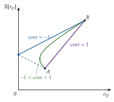
Fuente: elaboración propia a partir de Bodie, Kane y Marcus (2021, cap. 7). Sin ventas en corto: cuanto menor es la correlación, más riesgo elimina la diversificación.
El problema se resuelve en 2 etapas:
Etapa objetiva, igual para todos los inversores que comparten las estimaciones: la frontera de mínima varianza, las carteras de menor riesgo para cada rentabilidad esperada \(\bar r\): \[\begin{array}{rl}\displaystyle \min_{w_1,\dots,w_n} & \displaystyle \sigma_p^2=\sum_{i=1}^{n}\sum_{j=1}^{n}w_iw_j\,\sigma_{ij} \\ \text{s.a.} & \sum_{i=1}^{n}w_i\,\mathbb{E}[r_i]=\bar r \\ & \sum_{i=1}^{n}w_i=1 \\ & w_i\geq0\end{array}\] Al variar \(\bar r\) se obtiene la frontera; su tramo creciente, por encima de la cartera de mínima varianza global, es la frontera eficiente: las carteras que dan la máxima rentabilidad esperada para cada riesgo. Con \(n\) activos tiene la misma forma que con 2.
Etapa subjetiva, distinta para cada inversor: elige en la frontera eficiente la cartera que maximiza su utilidad, \(U(\mathbb{E}[r_p],\sigma_p)\), creciente en la media y decreciente en el riesgo. El óptimo es la tangencia entre la frontera eficiente y la curva de indiferencia más alta, con las curvas crecientes y convexas de los supuestos: el inversor más averso elige una cartera más a la izquierda, con menos riesgo y menos rentabilidad (gráfico 2).
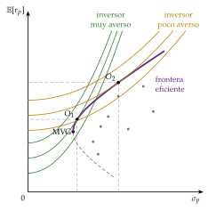
Fuente: elaboración propia a partir de Markowitz (1952), Bodie, Kane y Marcus (2021, cap. 7) y Sharpe, Alexander y Bailey (1999). Los puntos son activos individuales; la frontera eficiente es el tramo de la frontera de mínima varianza por encima de la cartera de mínima varianza global. El mismo gráfico, en «Markowitz model» (Wikipedia).
iii) Implicaciones
El riesgo mínimo no se logra comprando el activo menos arriesgado, sino diversificando, siempre que los activos no estén perfectamente correlacionados: la diversificación reduce el riesgo sin reducir la rentabilidad esperada.
La desviación típica de una cartera nunca supera la media ponderada de las desviaciones típicas de sus activos; solo la iguala con correlación perfecta positiva.
Lo que importa de un activo no es su varianza, sino su contribución al riesgo de la cartera, es decir, su covarianza con ella: el efecto de su peso sobre la varianza de la cartera es \(\partial\sigma_p^2/\partial w_i=2\,\mathrm{Cov}(r_i,r_p)\). Un activo muy volátil pero poco correlacionado con el resto puede reducir el riesgo total. Por eso los activos se valoran en conjunto, nunca uno a uno.
c) Valoración
Fue el primer criterio objetivo para decir que una cartera es mejor que otra, y explica por qué se diversifica.
Tiene 4 limitaciones, que abren los modelos siguientes:
No ordena las carteras eficientes entre sí: cuál elegir depende de las preferencias de cada uno. Lo resuelve el activo sin riesgo de Tobin (I.2.2).
Exige demasiados parámetros: con \(n\) activos, \(n\) medias, \(n\) varianzas y \(n(n-1)/2\) covarianzas, en total \(n(n+3)/2\) estimaciones; para las 35 acciones del IBEX, 665, y para 500, 125.750. Lo resuelve el modelo de la diagonal (I.2.3).
Es muy sensible a los errores de estimación: pequeños cambios en las medias estimadas cambian mucho la cartera óptima, que tiende a cargarse en los activos cuya rentabilidad se ha sobrestimado.
Es normativo: dice qué carteras son eficientes, pero no qué rentabilidad debe exigirse a un activo suelto, eficiente o no. Lo responde el CAPM (I.3.1).
I.2.2. El modelo de carteras mixtas (Tobin, 1958)
a) Idea
Si, además de los activos con riesgo, hay uno sin riesgo, con rentabilidad cierta \(r_f\), al que se puede prestar y del que se puede pedir prestado, el problema cambia: ya no hay que elegir un punto de la frontera, sino una sola cartera con riesgo y cuánto mezclarla con el activo seguro. Y entonces sí se pueden comparar las carteras eficientes entre sí.
b) Modelo
i) Supuestos
Los de Markowitz (I.2.1).
Un activo libre de riesgo, con rentabilidad cierta \(r_f\), en el que el inversor puede prestar (si dedica a él parte de su riqueza) o pedir prestado, sin límite, para invertir en activos con riesgo más de lo que tiene (apalancarse).
ii) Desarrollo
Una cartera con riesgo y el activo seguro forman una recta. Si se invierte una proporción \(w\) en una cartera con riesgo \(T\) y \(1-w\) en el activo sin riesgo, como este tiene varianza nula y no covaría con nada: \[\tag{5} \mathbb{E}[r_p]=(1-w)\,r_f+w\,\mathbb{E}[r_T],\qquad \sigma_p=w\,\sigma_T\] La media y la desviación típica son lineales en \(w\), y las combinaciones forman una recta que sale de \(r_f\): la línea de asignación de capital (CAL), cuya pendiente, \((\mathbb{E}[r_T]-r_f)/\sigma_T\), es la ratio de Sharpe de \(T\), la prima por unidad de riesgo total. Con \(w<1\) se presta; con \(w>1\) se pide prestado y la recta sigue a la derecha de \(T\). La recta no sale de que la desviación típica sea siempre una media ponderada, que no lo es, sino de que el activo seguro no tiene riesgo (anexo B.2).
La mejor recta es la tangente: el inversor quiere la CAL más inclinada, la que toca la frontera eficiente. El punto de tangencia es la cartera de tangencia \(T\), la de máxima ratio de Sharpe, y su recta domina a toda la frontera: \[\tag{6} \mathbb{E}[r_p]=r_f+\frac{\mathbb{E}[r_T]-r_f}{\sigma_T}\,\sigma_p\]
Cada inversor elige su punto en la recta según su aversión al riesgo: los más aversos prestan, a la izquierda de \(T\), y los menos aversos se endeudan, a la derecha (gráfico 3).10
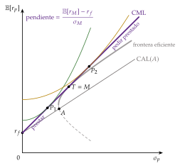
Fuente: elaboración propia a partir de Tobin (1958), Bodie, Kane y Marcus (2021, cap. 7) y Hassine y Roncalli (2013). La recta tangente domina a la frontera eficiente y a cualquier otra CAL; el prestamista se queda a la izquierda de \(T\) y el prestatario, a la derecha.
iii) Implicaciones
Teorema de separación: la decisión del inversor se parte en 2, y cada parte depende de cosas distintas.
Qué cartera con riesgo: la de tangencia \(T\), la misma para todos los que comparten las estimaciones, sean cuales sean sus preferencias. A diferencia de Markowitz, no depende de la actitud ante el riesgo.
Cuánto riesgo: el reparto entre \(T\) y el activo seguro, que sí depende de la aversión de cada uno.
Todos llegan a la misma cartera con riesgo por caminos distintos.
Permite comparar 2 carteras cualesquiera: la que tiene mayor ratio de Sharpe da una CAL más alta y es mejor para cualquier inversor, sean cuales sean sus preferencias.
De la tangencia al mercado: si además todos los inversores tienen las mismas expectativas, todos compran la misma \(T\); y para que se vacíen los mercados, \(T\) tiene que contener todos los activos con riesgo en proporción a su valor: es la cartera de mercado \(M\). La recta (6) con \(T=M\) es la línea del mercado de capitales (CML), con el nombre que le dieron Sharpe y Lintner, y su pendiente, \((\mathbb{E}[r_M]-r_f)/\sigma_M\), es el precio de mercado del riesgo. Es el puente hacia el CAPM.
c) Valoración
Resuelve la primera limitación de Markowitz: ordena las carteras por su ratio de Sharpe con independencia de las preferencias.
Pero mantiene el problema práctico de Markowitz, la cuenta de parámetros de I.2.1, que resuelve el modelo de la diagonal; supone que se puede pedir prestado al tipo sin riesgo; y sigue siendo normativo: dice qué carteras son eficientes, no qué rentabilidad corresponde a cada activo.
I.2.3. El modelo de la diagonal (Sharpe, 1963)
a) Idea
Para que el modelo de Markowitz pudiera aplicarse con cientos de títulos, Sharpe (1963) supone que los activos solo están correlacionados porque todos responden a un factor común, el mercado, medido por un índice bursátil. En lugar de estimar la correlación de cada título con todos los demás, basta con la de cada título con el índice: es la simplificación de Sharpe.11
b) Modelo
i) Supuestos
Un solo factor: el exceso de rentabilidad de cada activo sobre el tipo sin riesgo depende linealmente del exceso de rentabilidad del mercado (el modelo de índice): \[\tag{7} r_i-r_f=\alpha_i+\beta_i\,(r_M-r_f)+\varepsilon_i,\qquad \mathbb{E}[\varepsilon_i]=0,\quad \mathrm{Cov}(\varepsilon_i,r_M)=0\]
\(\beta_i=\mathrm{Cov}(r_i,r_M)/\mathrm{Var}(r_M)\) es la sensibilidad del activo al mercado, la pendiente de la regresión de su rentabilidad sobre la del mercado; la del propio mercado vale 1;
\(\alpha_i\) es la parte de su rentabilidad esperada que no se explica por el mercado;
\(\varepsilon_i\), con varianza \(\sigma_{\varepsilon_i}^2\), recoge lo propio de la empresa (un contrato, una huelga, un error de gestión).
Residuos independientes: los de 2 activos distintos no están correlacionados, \(\mathrm{Cov}(\varepsilon_i,\varepsilon_j)=0\) para \(i\neq j\); 2 títulos solo se relacionan a través del mercado. Por eso la matriz de varianzas y covarianzas de los residuos es diagonal, y de ahí el nombre del modelo. La de las rentabilidades no lo es: \(\sigma_{ij}=\beta_i\beta_j\sigma_M^2\).
ii) Desarrollo
El riesgo de un activo se parte en 2: el riesgo sistemático o de mercado, que se mide con la beta y no depende de la empresa, y el riesgo específico o idiosincrático, propio de ella: \(\sigma_i^2=\beta_i^2\sigma_M^2+\sigma_{\varepsilon_i}^2\).
El riesgo de una cartera: con pesos \(w_i\), la beta de la cartera es la media ponderada de las betas, \(\beta_p=\sum_iw_i\beta_i\), y su varianza es \[\tag{8} \sigma_p^2=\underbrace{\beta_p^2\,\sigma_M^2}_{\text{riesgo sistemático}}+\underbrace{\sum_{i=1}^{n}w_i^2\,\sigma_{\varepsilon_i}^2}_{\text{riesgo específico}}\]
Pocos parámetros: basta estimar \(\alpha_i\), \(\beta_i\) y \(\sigma_{\varepsilon_i}^2\) de cada activo, más la media y la varianza del mercado: \(3n+2\) parámetros en lugar de \(n(n+3)/2\) (para 100 títulos, 302 en lugar de 5.150).
iii) Implicaciones
Diversificar elimina el riesgo específico, pero no el sistemático. Con \(n\) activos a partes iguales, \(w_i=1/n\), el segundo sumando de (8) es el riesgo específico medio dividido por \(n\), y tiende a cero al crecer \(n\); el primero tiende a \(\bar\beta^{\,2}\sigma_M^2>0\), con \(\bar\beta\) la beta media, que no depende de \(n\) (gráfico 4; la demostración, en el anexo B.1).
Por eso, en una cartera bien diversificada, lo que importa de una acción es su beta, no su varianza: al añadirla, el inversor solo se fija en el riesgo sistemático que aporta. El riesgo específico es un riesgo que nadie está obligado a correr.
La diversificación internacional reduce también una parte del riesgo sistemático de un país, porque las bolsas de distintos países no se mueven del todo a la vez. Solnik (1974) estimó que una cartera bien diversificada de acciones de Estados Unidos conservaba el 27 % de la varianza de una acción típica, y una cartera internacional, el 11,7 %: menos de la mitad (gráfico 5).
Aun así, los inversores concentran sus carteras en las acciones de su país mucho más de lo que aconseja la teoría: es el sesgo doméstico (home bias).
Con la globalización financiera las bolsas se mueven más juntas, sobre todo en las crisis, cuando más falta hace la diversificación, y la ganancia de diversificar fuera es hoy menor que en los datos de Solnik.
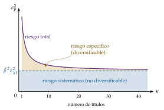
Fuente: elaboración propia a partir de Bodie, Kane y Marcus (2021, caps. 7 y 8). El riesgo específico desaparece al diversificar; el sistemático, \(\bar\beta^{\,2}\sigma_M^2\), se queda. Una explicación breve, en «Riesgo sistemático» (Economipedia).
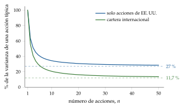
Fuente: elaboración propia: curva teórica de una cartera equiponderada calibrada con los suelos de Solnik (1974) (27 % con acciones de Estados Unidos y 11,7 % con acciones de varios países). Solo los 2 suelos son de Solnik; la forma de las curvas es la de la fórmula.
c) Valoración
Resuelve el problema práctico de Markowitz y da la medida del riesgo que no se puede diversificar, la beta. Es, además, la forma en que se estiman las betas en la práctica: la regresión (7).
Pero es un modelo estadístico: describe cómo se mueven los rendimientos, no por qué un activo debe rendir lo que rinde. Que el mercado solo pague el riesgo sistemático no se sigue del modelo de índice, sino del equilibrio del CAPM, al que pasamos.
Y un solo factor es una simplificación: los residuos de las empresas de un mismo sector sí están correlacionados, y entonces queda un riesgo que la diversificación no elimina además del sistemático. Los modelos de varios factores (I.3.2) lo corrigen.
I.3. Modelos de valoración basados en la teoría de la elección de cartera
Nexo: hasta aquí, la teoría de la cartera ha sido normativa: dice cómo debe elegir un inversor, tomando los precios como dados. Los modelos de valoración dan el paso positivo: si todos los inversores eligen así, ¿qué rentabilidad esperada tiene que ofrecer cada activo para que alguien quiera tenerlo? Hay 2 respuestas, la del equilibrio (el CAPM) y la del arbitraje (la APT).
I.3.1. El modelo de valoración de los activos de capital (CAPM)
Para ampliar en vídeo (en inglés). AnalystPrep, «Modern Portfolio Theory (MPT) and the Capital Asset Pricing Model (CAPM)»: https://www.
a) Idea
La CML de Tobin solo relaciona la rentabilidad y el riesgo de las carteras eficientes. El CAPM (capital asset pricing model) generaliza esa relación lineal a cualquier activo o cartera, eficiente o no.12 Por eso sirve para valorar: da la rentabilidad que el mercado exige a un activo según su riesgo, la tasa a la que se descuentan sus flujos.
Es un modelo de equilibrio, con supuestos fuertes, pero sigue siendo la referencia para calcular el coste de los fondos propios, evaluar a los gestores o fijar el precio de una acción que aún no cotiza, como en una oferta pública de venta.
b) Modelo
i) Supuestos
Un solo periodo: todos invierten hoy y miran solo a la rentabilidad del periodo siguiente.
Inversores de media y varianza: todos eligen como en Markowitz, con aversión al riesgo.
Expectativas homogéneas: todos tienen la misma información y estiman las mismas medias, varianzas y covarianzas.
Activo sin riesgo: se puede prestar y pedir prestado sin límite al mismo tipo \(r_f\).
Mercados competitivos y sin fricciones: muchos inversores precio-aceptantes, sin impuestos ni costes de transacción, y activos perfectamente divisibles.
Oferta fija: la cantidad de cada activo con riesgo está dada; el precio se ajusta para que se demande toda.
ii) Desarrollo
Todos tienen la cartera de mercado. Con expectativas homogéneas, todos calculan la misma cartera de tangencia; para que se vacíen los mercados, esa cartera es la de mercado, \(M\) (I.2.2). Cada inversor tiene \(M\) y el activo sin riesgo, en la proporción que le dicta su aversión.
El riesgo de un activo es lo que aporta al de \(M\). Como todos tienen \(M\), lo que cuenta de un activo no es su varianza sino su covarianza con \(M\) (la tercera implicación de Markowitz): su contribución marginal al riesgo de la cartera de mercado es \(\mathrm{Cov}(r_i,r_M)/\sigma_M\).
En equilibrio, cada unidad de riesgo se paga igual. Si un activo diera más prima por unidad de riesgo aportado que el mercado en su conjunto, todos querrían más de él: su precio subiría y su rentabilidad esperada bajaría hasta igualarse con la del mercado, \(\lambda_M/\sigma_M\). Despejando se obtiene la beta y la línea del mercado de títulos (security market line, SML), la ecuación del CAPM: \[\tag{9} \beta_i\equiv\frac{\mathrm{Cov}(r_i,r_M)}{\mathrm{Var}(r_M)}=\mathrm{corr}(r_i,r_M)\,\frac{\sigma_i}{\sigma_M}\]
\[\mathbb{E}[r_i]=r_f+\beta_i\,\lambda_M,\qquad \lambda_M\equiv\mathbb{E}[r_M]-r_f\tag{10}\]
La rentabilidad exigida a un activo es la del activo sin riesgo más una prima igual a su cantidad de riesgo sistemático, \(\beta_i\), por el precio de ese riesgo, la prima del mercado \(\lambda_M\) (gráfico 6). La derivación formal de Sharpe (1964), en el anexo B.3.
El argumento es de equilibrio (vaciado de los mercados y reajuste de las carteras), no de arbitraje, ni necesita que las rentabilidades sean normales: basta con que los inversores elijan por la media y la varianza.
La beta. Mide la sensibilidad de la rentabilidad de un activo a la del mercado y, en el CAPM, su riesgo sistemático, (9). La de una cartera es la media ponderada de las de sus activos, \(\beta_p=\sum_iw_i\beta_i\), y la del mercado vale 1, porque \(\mathrm{Cov}(r_M,r_M)=\mathrm{Var}(r_M)\).
Clasificación, según la SML, \(\mathbb{E}[r_i]-r_f=\beta_i\lambda_M\) (tabla 2). Las acciones cíclicas suelen tener betas mayores que 1, y las defensivas, menores (anexo A).
La beta no es la volatilidad: por (9), es la volatilidad relativa al mercado multiplicada por la correlación con él. Una acción muy volátil pero poco correlacionada con el mercado puede tener una beta baja. El riesgo total de un activo es la suma del sistemático y del específico, la (8) para un solo activo: \(\sigma_i^2=\beta_i^2\sigma_M^2+\sigma_{\varepsilon_i}^2\), un triángulo rectángulo de desviaciones típicas (figura 1).
Determinantes: el tipo de negocio (cuánto dependen sus ventas del ciclo), el apalancamiento operativo (el peso de los costes fijos) y el apalancamiento financiero: a más deuda, más beta de los fondos propios.
| Beta | Activo | Qué hace y qué rentabilidad esperada se le exige |
|---|---|---|
| \(\beta_i>1\) | Agresivo | Amplifica los movimientos del mercado; se le exige más que al mercado |
| \(\beta_i=1\) | Neutro | El mismo riesgo sistemático que el mercado y la misma rentabilidad esperada, aunque puede tener más riesgo total |
| \(0<\beta_i<1\) | Defensivo | Amortigua los movimientos del mercado; rentabilidad esperada entre \(r_f\) y \(\mathbb{E}[r_M]\) |
| \(\beta_i=0\) | Sin riesgo sistemático | Rinde \(r_f\), aunque su rentabilidad varíe mucho: todo su riesgo es diversificable |
| \(\beta_i<0\) | Refugio | Sube cuando el mercado cae; como asegura la cartera, rinde menos que \(r_f\) |
Fuente: elaboración propia a partir de Bodie, Kane y Marcus (2021, caps. 8 y 9). La rentabilidad es la esperada, no la que se obtiene cada año.
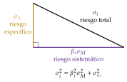
Fuente: elaboración propia a partir de Bodie, Kane y Marcus (2021, cap. 8).
iii) Implicaciones
Todo activo bien valorado está sobre la SML. Lo que difiere entre activos es la prima, \(\beta_i\lambda_M\); lo que es igual para todos es el precio del riesgo, \(\lambda_M\), la prima por unidad de beta.13
Activos fuera de la recta: la distancia vertical a la SML es el alfa de Jensen, \(\alpha_i=\mathbb{E}[r_i]-r_f-\beta_i\lambda_M\), la constante del modelo de índice (7).
Un activo con \(\alpha_i>0\), por encima de la recta, rinde más de lo que exige su riesgo: está infravalorado. Los inversores lo compran (buscan alfa), su precio sube y su rentabilidad esperada baja hasta la recta. Con \(\alpha_i<0\) ocurre lo contrario (gráfico 6). Así, la SML es una relación de equilibrio: fuera de ella, todos tendrían incentivos a recomponer sus carteras.
Jensen (1968) estimó el alfa de 115 fondos de inversión de 1945 a 1964: de media, descontados los gastos, era negativo. Es la primera prueba de que la gestión activa no bate al mercado, y la medida con la que se evalúa hoy a los gestores (II.1).
Solo se paga el riesgo sistemático: los activos tienen rentabilidades esperadas distintas porque tienen betas distintas, no porque tengan varianzas distintas. Ante el riesgo sistemático no hay diversificación que valga: «cuando llueve, todos se mojan». El específico no se paga: quien no diversifica corre un riesgo por el que nadie le compensa.
CML y SML no son la misma recta: las carteras eficientes están en las 2, pero un activo suelto solo está en la SML, por debajo de la CML, porque su riesgo específico no se paga (anexo B.5).
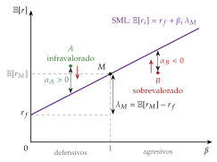
c) Extensiones
Sin activo libre de riesgo: en el CAPM de beta cero, sin activo seguro o sin poder endeudarse a su tipo, la SML se mantiene, pero su ordenada en el origen es la rentabilidad esperada de una cartera sin correlación con \(M\), mayor que \(r_f\). La recta es más plana, como en los datos (d).
Varios periodos: en el CAPM intertemporal, los inversores quieren cubrirse también de los cambios en las oportunidades de inversión futuras (en los tipos de interés, por ejemplo), y aparecen otras betas, además de la de mercado. Es un fundamento teórico de los modelos de varios factores.
Basado en el consumo (C-CAPM): Breeden (1979), a partir de la ecuación de Euler de un hogar que reparte su consumo entre periodos, muestra que lo que importa no es la riqueza, sino el consumo. Un activo es arriesgado si rinde poco cuando el consumo es bajo, y su prima depende de su covarianza con el crecimiento del consumo, la beta de consumo. Con aversión relativa al riesgo constante \(\theta\), \[\mathbb{E}_t[r_{i,t+1}]-r_f\simeq\theta\,\mathrm{Cov}_t\left(r_{i,t+1},\Delta\ln C_{t+1}\right),\] y el CAPM es el caso particular en que el consumo se mueve con la cartera de mercado [ver tema 3.A.33]. Con datos de Estados Unidos, el consumo varía tan poco que la fórmula solo explica la prima de las acciones con una aversión al riesgo inverosímil: es el enigma de la prima de riesgo, al que vuelven las finanzas conductuales (II.2).
Varios factores: la APT (I.3.2) y sus versiones empíricas.
d) Evidencia empírica
Primeros contrastes, favorables con matices: con datos de la bolsa de Nueva York, la relación entre beta y rentabilidad media es lineal y positiva, pero más plana de lo que predice la SML: los activos de beta baja rinden más de lo previsto y los de beta alta, menos.
Las anomalías: Fama y French (1992) encuentran que, de 1963 a 1990, la beta apenas explica las diferencias de rentabilidad media entre acciones, mientras que el tamaño (las pequeñas rinden más) y la relación entre el valor contable y el de mercado (las de valor rinden más) sí lo hacen. Años después concluyen que el historial empírico del modelo es tan pobre que invalida el uso que se le da en la práctica.
Las defensas: Jagannathan y Wang (1996) muestran que, si se deja que las betas cambien con el ciclo y se añade el capital humano a la riqueza del mercado, el CAPM explica buena parte de esas diferencias (su documento de trabajo previo se titulaba, significativamente, «el CAPM está vivo y bien»).
Para acciones sueltas, el ajuste es muy pobre: el CAPM explica de media en torno al 3 % de las diferencias de rentabilidad entre acciones, y el modelo de 3 factores de Fama y French, el 5 %. Hay autores que lo consideran inútil para valorar: Fernández (2015) sostiene que con betas históricas se cometen errores enormes y que la diferencia histórica entre la rentabilidad del mercado y la de la renta fija no es la prima que exigen los inversores.
En la práctica, sin embargo, es el modelo más usado: en la encuesta de J. R. Graham y Harvey (2001), casi 3 de cada 4 directores financieros estadounidenses lo usaban para estimar el coste de sus fondos propios.
e) Valoración
Aplicaciones:
el coste de los fondos propios, \(r_E=r_f+\beta_E\lambda_M\), para descontar los dividendos o los flujos de una empresa (III.1) y calcular el coste medio ponderado del capital con el que se evalúan los proyectos de inversión [ver tema 3.B.2];
la evaluación de los gestores (alfa de Jensen, ratios de Sharpe y Treynor) y la regulación de tarifas, al fijar la rentabilidad permitida de las empresas reguladas;
una referencia de precio cuando no hay mercado, como en una salida a bolsa.
Limitaciones:
La beta no se observa: se estima, con error, y cambia en el tiempo. Se estima con la regresión del modelo de índice, normalmente con unos 60 meses de datos, y las betas estimadas tienden a volver hacia 1; por eso se ajustan, \(\beta^{\mathrm{aj}}=\tfrac23\hat\beta+\tfrac13\). Además, la beta de los fondos propios sube con la deuda, \(\beta_E=\beta_A\left[1+(1-t_{\mathrm{IS}})\,V_D/V_E\right]\) [ver tema 3.B.3].
La prima de mercado \(\lambda_M\) tampoco se observa: se aproxima con la media histórica, que depende del periodo y del país, o con encuestas.
Los supuestos: un solo periodo, expectativas homogéneas y endeudamiento ilimitado al tipo sin riesgo; relajarlos da las extensiones (c). Y si los residuos de las empresas están correlacionados entre sí, queda riesgo sin diversificar además del sistemático.
La evidencia: el tamaño, el valor y el momentum explican rentabilidades que la beta no explica (d), lo que abre la puerta a los modelos de varios factores.
La cartera de mercado no se observa: es la crítica de Roll, la más profunda.
La crítica de Roll: el CAPM, tal como se contrasta, no se puede contrastar.14
La SML se cumple de forma exacta, por pura aritmética, siempre que la cartera con la que se calculan las betas sea eficiente en media y varianza (anexo B.3). Lo único que se pone a prueba, por tanto, es si la cartera de mercado es eficiente.
Pero la verdadera cartera de mercado no se observa: incluye todos los activos con riesgo, también los inmuebles, las empresas que no cotizan y el capital humano. En su lugar se usa un índice bursátil, y el contraste pasa a serlo de la eficiencia del índice: si se rechaza, puede que el índice sea ineficiente aunque el CAPM sea cierto; si no se rechaza, puede que el índice sea eficiente aunque el CAPM sea falso.
La salida de Shanken: Shanken (1987) propone suponer solo una correlación mínima entre el índice que se usa y la cartera de mercado verdadera, que razonablemente es alta. Si el modelo se rechaza aun con una correlación baja, se rechaza con más razón con la verdadera. Con ese método, Rubio Irigoyen (1986) rechazó el CAPM, con un alto grado de confianza, en la bolsa española entre 1963 y 1982: bastaba con que el índice y la cartera de mercado tuvieran una correlación de al menos 0,50.
I.3.2. La teoría de valoración por arbitraje (APT)
Para ampliar en vídeo (en inglés). AnalystPrep, «Factor Theory»: https://www.
a) Idea
El CAPM llega a la SML con supuestos fuertes sobre las preferencias y con una cartera que no se observa. Ross (1976) llega a una relación lineal parecida por otro camino: sin suponer nada de las preferencias, salvo que se prefiere más riqueza a menos, basta con que los rendimientos dependan de unos pocos factores comunes y con que no haya oportunidades de arbitraje.
Un arbitraje es una estrategia que no cuesta nada, no tiene riesgo y da un beneficio positivo. Si existiera, todos la harían en cantidades ilimitadas y los precios cambiarían hasta eliminarla: no se puede ganar sin invertir ni sin arriesgar. Es, otra vez, «nadie da nada por nada». Basta con unos pocos arbitrajistas bien informados: no hace falta que todos los inversores elijan por la media y la varianza.
Y a diferencia del CAPM, el riesgo de un título no se reduce a su sensibilidad al mercado: otras fuerzas económicas, cuyas variaciones inesperadas afectan a muchos títulos a la vez, también son riesgo sistemático, y cada una tiene su beta.
b) Modelo
i) Supuestos
Los rendimientos los genera un modelo factorial lineal: \(J\) factores comunes, cuyas sorpresas tienen media nula, y un componente específico de cada activo, sin correlación con los factores ni entre activos.
Hay muchos activos, de modo que se pueden formar carteras bien diversificadas, sin riesgo específico.
Mercados competitivos y sin fricciones, sin restricciones a las ventas en corto, e inversores que prefieren más riqueza a menos.
En equilibrio no hay oportunidades de arbitraje: ningún inversor puede, cambiando su cartera, ganar más con el mismo riesgo y sin invertir más.
No hace falta suponer inversores de media y varianza, ni un activo sin riesgo al que todos presten y pidan prestado, ni una cartera de mercado: por eso sus supuestos son menos exigentes que los del CAPM.
ii) Desarrollo
El rendimiento de cada activo: \[\tag{11} r_i=\mathbb{E}[r_i]+\beta_{i1}F_1+\beta_{i2}F_2+\dots+\beta_{iJ}F_J+\varepsilon_i\] donde \(F_j\) es la sorpresa del factor \(j\), la parte no anticipada de su variación, con media nula; \(\beta_{ij}\), la sensibilidad del activo \(i\) a ese factor; y \(\varepsilon_i\), el riesgo específico.
La ecuación de valoración: una cartera bien diversificada y sin exposición a ningún factor no tiene riesgo, y por tanto tiene que rendir \(r_f\); y una que no cuesta nada (porque se financia vendiendo en corto otros activos) y no tiene riesgo no puede rendir nada. Exigirlo para todas las carteras posibles obliga a que la rentabilidad esperada sea lineal en las sensibilidades:
\[\mathbb{E}[r_i]=r_f+\beta_{i1}\lambda_1+\beta_{i2}\lambda_2+\dots+\beta_{iJ}\lambda_J\tag{12}\]
donde \(\lambda_j\) es la prima de riesgo del factor \(j\), la rentabilidad esperada por encima de \(r_f\) de una cartera con sensibilidad 1 a ese factor y 0 a los demás. Con un solo factor, la cartera de mercado, es la SML.
Ejemplo: si 2 carteras bien diversificadas tienen la misma beta y distinta rentabilidad esperada, comprar la mejor y vender en corto la misma cantidad de la peor da un beneficio seguro sin invertir nada. Al hacerlo, los precios se mueven y la diferencia desaparece (la derivación con un factor, en el anexo B.4).
¿Qué factores? La teoría no lo dice. Hay 2 enfoques:
macroeconómicos: Chen, Roll y Ross (1986) encuentran que se pagan la producción industrial, la inflación no anticipada y los cambios en la prima de riesgo de crédito y en la pendiente de la curva de tipos. Y cada sector tiene los suyos: para valorar una petrolera hay que mirar el precio del petróleo;
características de las empresas que funcionan como indicadores de riesgos no observados: el modelo de 3 factores de Fama y French (1993) (c).
iii) Implicaciones
Solo se paga el riesgo sistemático, ahora con varias dimensiones: 2 activos con la misma beta de mercado pueden exigir rentabilidades distintas si responden de forma distinta a la inflación o al crecimiento. Para el CAPM serían sustitutos perfectos; para la APT, no.
El CAPM es un caso particular de la APT, con un único factor, la cartera de mercado.
No necesita la cartera de mercado ni que todos los inversores optimicen por la media y la varianza, y por eso escapa a la crítica de Roll.
c) Evidencia empírica
El modelo de 3 factores de Fama y French (1993) se estima como una regresión en excesos sobre el tipo sin riesgo: \[\tag{13} r_{i,t}-r_{f,t}=\alpha_i+\beta_{i,M}\,(r_{M,t}-r_{f,t})+\beta_{i,\mathrm{SMB}}\,\mathrm{SMB}_t+\beta_{i,\mathrm{HML}}\,\mathrm{HML}_t+\varepsilon_{i,t}\]
el exceso de rentabilidad del mercado, que recoge los factores macroeconómicos;
\(\mathrm{SMB}\) (small minus big), el tamaño: la rentabilidad de una cartera de empresas pequeñas menos la de una de empresas grandes;
\(\mathrm{HML}\) (high minus low), el valor: la rentabilidad de una cartera de empresas con un valor contable alto en relación con su valor de mercado (empresas de valor) menos la de las que lo tienen bajo (de crecimiento). Es la versión empírica de la inversión en valor del análisis fundamental (III.1);
si el modelo está bien especificado, \(\alpha_i=0\).
Después se han añadido el momentum, la tendencia de las acciones que más han subido en el último año a seguir subiendo unos meses, como cuarto factor, y la rentabilidad y la inversión de las empresas, en el modelo de 5 factores de Fama y French (2015).
¿Son primas por riesgo o errores del mercado? Para Fama y French, los factores recogen riesgos que el CAPM no ve (las empresas pequeñas y de valor sufren más en las recesiones); para las finanzas conductuales (II.2), son errores sistemáticos de los inversores. Es otra forma de la hipótesis conjunta (II.1.2).
d) Valoración
A favor: supuestos mucho más débiles que los del CAPM, no depende de una cartera de mercado que no se observa y admite varias fuentes de riesgo sistemático.
En contra: no dice cuántos ni cuáles son los factores, ni el signo o el tamaño de sus primas. En los primeros contrastes bastaban 3 o 4 factores; desde entonces la lista no ha dejado de crecer, y el riesgo es encontrar factores por pura búsqueda en los datos. Los factores, además, pueden cambiar con el tiempo, lo que hace el modelo más difícil de aplicar. Y es una relación aproximada: se cumple para la mayoría de los activos, no necesariamente para todos.
La falta de una teoría de los factores no es falta de fundamento: la APT lo tiene, el no arbitraje. Lo que no tiene es una teoría de qué riesgos se pagan; la tabla 3 resume en qué se parece y en qué se diferencia del CAPM.
| CAPM | APT | |
|---|---|---|
| Lógica | Equilibrio: todos los inversores optimizan por la media y la varianza | No arbitraje: basta con unos pocos arbitrajistas |
| Factores | Uno, la cartera de mercado | Varios, sin especificar |
| Ecuación | \(\mathbb{E}[r_i]=r_f+\beta_i\lambda_M\) | \(\mathbb{E}[r_i]=r_f+\sum_j\beta_{ij}\lambda_j\) |
| Cartera de mercado | Imprescindible (y no se observa) | No hace falta |
| 2 activos con la misma beta de mercado | Son sustitutos perfectos | Pueden responder distinto a otros factores |
| Exactitud | Exacta para todos los activos | Aproximada para la mayoría |
| En común: el mismo objetivo, la prima que hay que sumar a \(r_f\) para obtener la rentabilidad exigida; solo se paga el riesgo sistemático; la relación es lineal; mercados sin costes de transacción. Ninguno supone la eficiencia informativa: la APT supone la ausencia de arbitraje, la primera de las definiciones de eficiencia (II.1.3) | ||
Fuente: elaboración propia a partir de Bodie, Kane y Marcus (2021, cap. 10).
Recapitulación: el riesgo de una acción se mide por lo que aporta a una cartera; diversificar elimina el específico, y en equilibrio solo se paga el sistemático, sea la beta de mercado del CAPM o las betas de los factores de la APT.
Nexo: si todos los activos están sobre su recta, ningún alfa es distinto de cero y no hay nada que buscar. ¿Lo están? Es la pregunta de la eficiencia de los mercados, a la que pasamos.
II. Gestión activa de carteras (I): la hipótesis de los mercados eficientes y su incumplimiento
En el cante (4′30″). La hipótesis de los mercados eficientes (2′45″): la gestión pasiva frente a la activa y la definición de Fama, con el dicho «a buenas horas, mangas verdes»; la hipótesis conjunta en 2 frases; los 3 sentidos de la eficiencia, con la tabla 4 (3 filas), que vuelve en el bloque III; la paradoja de Grossman y Stiglitz y los límites al arbitraje, de palabra. Las finanzas conductuales (1′45″): la idea, los sesgos en una lista corta y la primera fila de la tabla 5, de palabra, enlazada con el enigma de la prima del C-CAPM. Las notas al pie, el resto de los enigmas y la nota sobre las burbujas son para las preguntas del tribunal.
Conclusión anticipada: si los mercados son eficientes, los precios ya recogen toda la información, ningún activo tiene alfa y basta la gestión pasiva. La evidencia y las finanzas conductuales dejan un resquicio a la gestión activa, pero estrecho: los errores de los inversores pueden mover los precios, y aprovecharlos es caro y arriesgado.
Nexo: una vez estudiados los modelos que dicen qué rentabilidad corresponde a cada activo, pasamos a preguntarnos si los precios del mercado la respetan.
II.1. La hipótesis de los mercados eficientes
II.1.1. Gestión pasiva y gestión activa
Gestión pasiva: en el CAPM y en la APT todos los activos están sobre su recta y ningún alfa es distinto de cero. Si es así, lo mejor es comprar el mercado entero, con un fondo indexado o un ETF que replique un índice amplio, y elegir solo la proporción del activo sin riesgo, con comisiones mínimas. Es lo que hacen cada vez más ahorradores: en septiembre de 2026, los fondos indexados tenían el 54,5 % del patrimonio de los fondos de inversión a largo plazo de Estados Unidos.
Gestión activa: busca alfas positivos, con activos mal valorados (selección de valores) o con el momento de entrar y salir del mercado (market timing), mediante el análisis fundamental o el técnico (bloque III). Solo tiene sentido si los precios no recogen ya toda la información.
¿La recogen? Es la hipótesis de los mercados eficientes (HME): un mercado es eficiente si los precios reflejan en todo momento toda la información disponible.
Sus antecedentes son la tesis de Bachelier (1900), que modelizó los precios como un paseo aleatorio; la observación de que los precios de las acciones parecen seguirlo; y la demostración de que los precios bien anticipados fluctúan de forma impredecible. Es una aplicación de las expectativas racionales a los mercados financieros [ver tema 3.A.6].
La intuición: si se pudiera prever que mañana el precio va a subir, se compraría hoy, y el precio subiría hoy. Solo la información nueva, que por definición no se puede prever, mueve los precios. Cuando la noticia llega al inversor de a pie, ya está en el precio: «a buenas horas, mangas verdes».
II.1.2. La hipótesis conjunta
Eugene Fama recibió en 2013 el Premio Nobel, con Lars Peter Hansen y Robert Shiller, «por su análisis empírico de los precios de los activos», sobre todo por sus trabajos sobre la eficiencia de los mercados.15
Decir que un precio «refleja toda la información» exige saber qué precio sería el correcto, es decir, un modelo de rentabilidades esperadas: uno de equilibrio, como el CAPM, o de arbitraje, como la APT. Por eso toda prueba de eficiencia contrasta a la vez 2 hipótesis:
que hay un modelo de valoración que dice cuál es la rentabilidad «normal» de cada activo;
que los precios reflejan toda la información disponible.
Es la hipótesis conjunta (joint hypothesis): si se encuentra una rentabilidad «anormal», no se sabe si el mercado es ineficiente o si el modelo no recoge un riesgo que sí se paga. Por eso el debate sobre la eficiencia no se cierra.
II.1.3. Las definiciones de eficiencia
Complica el análisis que la palabra «eficiencia» se use en 3 sentidos distintos en los mercados financieros, de menos a más exigente en lo que piden a los precios:
Eficiencia como ausencia de arbitraje: en equilibrio no quedan oportunidades de inversión sin explotar; nadie puede, cambiando su cartera, ganar más con el mismo riesgo.16 No exige que todos los agentes sean racionales ni que los precios sigan a los fundamentales: puede haber ausencia de arbitraje con burbujas.17 Es el supuesto de la APT.
Eficiencia informativa: el precio que resulta de la oferta y la demanda es una buena estimación del valor real del activo, su valor intrínseco, porque incorpora toda la información, y deprisa. Roberts (1967) distinguió 3 conjuntos de información, cada uno contenido en el siguiente, y Fama (1970) los convirtió en 3 formas de eficiencia (tabla 4):
débil: los precios recogen toda la información histórica, la de los precios y volúmenes pasados. No se puede ganar de forma sistemática con el análisis técnico, pero sí, en principio, con el fundamental: es la única forma que deja sitio a la gestión activa;
semifuerte: recogen además toda la información pública, de las cuentas anuales a los hechos relevantes de la empresa. Tampoco sirve el análisis fundamental: solo se podría ganar con información privada;
fuerte: recogen incluso la información privada, la que solo tienen unos pocos. Ni siquiera con información privilegiada (cuyo uso, además, está prohibido) se bate al mercado.
Fama rebautizó después estas formas como contrastes de la predecibilidad de las rentabilidades, estudios de acontecimientos y contrastes de información privada.
Eficiencia en el sentido de Pareto: la del primer teorema fundamental de la economía del bienestar: no hay otra asignación de los recursos que mejore a alguien sin empeorar a nadie [ver tema 3.A.22]. Es la más exigente: pide mercados completos [ver tema 3.A.21] y que no haya externalidades ni información asimétrica.
Las mismas definiciones se aplican al mercado de divisas [ver tema 3.B.13].
| Forma | El precio recoge la información… | ¿Sirve el análisis técnico? | ¿Sirve el análisis fundamental? |
|---|---|---|---|
| Débil | histórica | No | Sí |
| Semifuerte | histórica y pública | No | No |
| Fuerte | histórica, pública y privada | No | No |
Fuente: elaboración propia a partir de Fama (1970). Cada forma implica la anterior; con la fuerte, ni la información privilegiada permite batir al mercado.
II.1.4. ¿Son eficientes los mercados financieros?
A favor: hay muchos inversores, que entran y salen libremente, con costes de transacción bajos y mucha información; las rentabilidades a corto plazo son casi impredecibles; los precios reaccionan en minutos a los anuncios públicos; y los gestores activos, de media, no baten al índice una vez descontadas las comisiones.
En contra:
la paradoja de Grossman y Stiglitz: si los precios lo reflejaran todo, nadie tendría incentivos a pagar por informarse, y entonces los precios no podrían reflejar la información. Un mercado no puede ser perfectamente eficiente: tiene que quedar el margen justo para remunerar a quien se informa;
el exceso de volatilidad: las cotizaciones oscilan mucho más que los dividendos que, en teoría, descuentan;
las anomalías: el tamaño, el valor y el momentum (I.3.2), la sobrerreacción a largo plazo (II.2) y las burbujas.
Por qué el arbitraje no corrige siempre los errores: aprovechar los errores ajenos exige capital, paciencia y asumir riesgo, y los precios pueden alejarse aún más antes de volver. Así, una burbuja puede durar aunque los inversores informados sepan que lo es: como nadie sabe cuándo estallará, a cada uno le conviene seguir en ella y salir justo antes que los demás.
Lectura:
la ausencia de arbitraje es plausible, o, donde no se cumple, aprovechar el arbitraje es tan costoso que no compensa;
la eficiencia informativa es una buena aproximación, no una ley exacta: se han observado regularidades en los precios que la información disponible no explica;
la eficiencia en el sentido de Pareto no se cumple, porque los mercados son incompletos y hay información asimétrica y externalidades. Aun así, defensores de la HME como John Cochrane admiten estos fallos, pero sostienen que suelen ser pequeños y dudan de que la intervención pública los corrija.
II.2. La crítica de las finanzas conductuales
Idea: las finanzas conductuales aplican a los mercados la economía conductual [ver tema 3.A.1], muy ligada a la teoría de las perspectivas de Kahneman y Tversky (1979)18 [ver tema 3.A.10]. Los inversores no son del todo racionales ni diversifican de forma eficiente, y sus errores son sistemáticos, no aleatorios; como el arbitraje es limitado (II.1.4), esos errores pueden mover los precios. Thaler propone estudiar cómo deciden de verdad los inversores (análisis positivo), y no solo cómo deberían decidir, que es el análisis normativo de Markowitz y del CAPM.
Sesgos en las creencias:
exceso de confianza: los inversores sobrestiman la precisión de su información y operan demasiado. Con datos de 66.000 hogares clientes de un intermediario estadounidense, los que más operaban obtenían las rentabilidades netas más bajas, y los hombres operaban más que las mujeres y ganaban menos. Ayuda a explicar por qué tanta gente prefiere la gestión activa a la pasiva;
extrapolación: se proyecta al futuro lo que ha pasado en una racha corta; por ejemplo, se da por hecho que la acción que ha subido seguirá subiendo. Las acciones que más han caído en 3 a 5 años rinden después más que las que más han subido: el mercado sobrerreacciona.
Preferencias no estándar:
la aversión a las pérdidas de la teoría de las perspectivas [ver tema 3.A.10], que explica los enigmas de la tabla 5;
el sesgo por el presente: el descuento de la teoría estándar es exponencial, el único que es dinámicamente consistente, mientras que las personas descuentan mucho el futuro inmediato y poco el lejano, con un descuento cuasihiperbólico [ver tema 3.A.1]. En las finanzas personales, lleva a ahorrar menos de lo planeado para la jubilación y a buscar compromisos que lo eviten.
Decisiones no estándar: las cuentas mentales. Aunque el dinero es fungible, se reparte en cuentas que se tratan de forma distinta: se es prudente con la cuenta de los estudios de los hijos y arriesgado con la de inversión. Y cada riesgo se evalúa por separado, sin tener en cuenta las covarianzas con el resto de la cartera, que son justo lo que importa en Markowitz y en el CAPM.
Los enigmas: la teoría de las perspectivas explica 4 regularidades que la teoría financiera tradicional explica mal (tabla 5, que recoge también el anexo de finanzas conductuales de otro tema [ver tema 3.A.1]). La primera es el enigma de la prima de riesgo del C-CAPM (I.3.1): para Benartzi y Thaler (1995), un inversor que revisa su cartera muy a menudo, y al que las pérdidas duelen el doble que las ganancias, ve las acciones muy arriesgadas y exige por ellas una prima alta; la exigencia baja cuanto más largo es el periodo con el que evalúa la cartera, como confirman los experimentos.
| Enigma | Qué se observa | Explicación conductual |
|---|---|---|
| Prima de las acciones | En Estados Unidos, de 1928 a 2025, las acciones rindieron de media unos 6,6 puntos al año más que las letras del Tesoro y 5,5 más que los bonos a 10 años, mucho más de lo que explica la utilidad esperada con una aversión razonable | Aversión miope a las pérdidas |
| Exceso de volatilidad | Las cotizaciones oscilan más que los dividendos que descuentan | Tras ganar, se arriesga «el dinero de la casa» y la aversión baja; tras perder, sube: los movimientos se amplifican |
| Efecto disposición | Se venden pronto las acciones que ganan y se retienen las que pierden | Forma de S de la función de valor: cóncava en las ganancias, convexa en las pérdidas |
| Dividendos | Las empresas de Estados Unidos los pagaban aunque, hasta 2003, tributaban más que las plusvalías | 2 ganancias separadas se valoran más que una sola de la misma cuantía, y un dividendo hace menos dolorosa una pérdida |
Fuente: elaboración propia. En fondo salvia, el que se canta.
Si el tribunal pregunta si las finanzas conductuales refutan la eficiencia de los mercados, conviene distinguir los sentidos de II.1.3. Que haya inversores con sesgos no implica que haya oportunidades de arbitraje: la ausencia de arbitraje se cumple incluso con burbujas, porque nadie sabe cuándo estallarán (II.1.4). Lo que los sesgos ponen en duda es la eficiencia informativa, y con ella la idea de que el precio es siempre la mejor estimación del valor.
Recapitulación: si los mercados son eficientes, basta la gestión pasiva; pero la eficiencia informativa es solo una aproximación, los inversores cometen errores sistemáticos y el arbitraje no siempre los corrige.
Nexo: queda, por tanto, un margen para la gestión activa. ¿Con qué herramientas se intenta aprovechar? Con el análisis fundamental y con el análisis técnico.
III. Gestión activa de carteras (II): análisis fundamental y análisis técnico
En el cante (8′). La apertura, de palabra (0′30″). El análisis fundamental (4′): la idea, con el dicho «todo necio confunde valor y precio»; los enfoques y los métodos estáticos en una frase; la (14) y la (15), con la \(r_E\) que sale de la SML; el PER y el EV/EBIT, de palabra; el CAPE con su último dato. El análisis técnico (3′30″): la definición, las 3 premisas y su choque con la forma débil (con la tabla 4), la teoría de Dow en una frase, el gráfico 7 esquemático y la evidencia. El gráfico 8 es de apoyo; los indicadores del anexo C no se cantan.
Conclusión anticipada: si los precios pueden apartarse del valor, hay 2 maneras de buscar el alfa. El análisis fundamental estima el valor intrínseco a partir de la empresa y apuesta a que el precio acabará convergiendo a él; el técnico estudia solo la historia de los precios y apuesta a que las pautas se repiten. El primero solo funciona si el mercado no es eficiente en sentido semifuerte; el segundo, si no lo es ni en sentido débil.
Nexo: estudiado el margen que deja la ineficiencia, pasamos a las 2 técnicas con que la gestión activa intenta aprovecharlo.
III.1. Análisis fundamental
Idea: el análisis fundamental estima el valor intrínseco de una acción, el que se deriva de la capacidad de la empresa para generar beneficios y flujos de caja, y lo compara con su precio de mercado. Si el valor es mayor que el precio, la acción está infravalorada y se compra; si es menor, sobrevalorada, y se vende. Lo sistematizaron B. Graham y Dodd (1934).19 Detrás está la diferencia entre lo que algo vale y lo que cuesta: «todo necio confunde valor y precio», en palabras que suelen atribuirse a Antonio Machado.
Enfoques:
de arriba abajo (top-down): de la situación de la economía al sector y del sector a la empresa;
de abajo arriba (bottom-up): de la empresa concreta al sector y a la economía.
Su lugar en la exposición: solo puede batir al mercado de forma sistemática si este no es eficiente en sentido semifuerte (tabla 4). Si lo es, sigue siendo imprescindible para valorar empresas que no cotizan o para fijar el precio de una salida a bolsa, pero no para ganar al mercado.
Métodos:
estáticos, basados en el balance: el valor contable (el de los libros), el de liquidación (lo que se obtendría vendiendo los activos) y el sustancial o de reposición (lo que costaría reponerlos). Son una primera aproximación, pero no miran al futuro ni tienen en cuenta el tiempo;
dinámicos, por descuento de flujos: el valor de una acción es el valor actual de lo que generará. Con flujos de caja libres descontados al coste medio ponderado del capital se obtiene el valor de la empresa, y restando la deuda neta, el de las acciones [ver tema 3.B.4];
relativos, por múltiplos de empresas comparables.
El puente con el CAPM: el modelo de Gordon y Shapiro. Si el valor intrínseco es el valor actual de los dividendos y estos crecen a una tasa constante \(g<r_E\) [ver tema 3.B.4]: \[\tag{14} P_0=\frac{D_1}{r_E-g},\qquad g=b\cdot\mathrm{ROE}\] donde \(b\) es la tasa de retención de beneficios y \(r_E\) la rentabilidad que se exige a la acción por su riesgo: la de la SML (10). Así, la teoría de la cartera da al análisis fundamental su tasa de descuento. Dividiendo por el beneficio por acción, como \(D_1=(1-b)\,\mathrm{BPA}_1\), se obtiene el PER que justifican los fundamentos: \[\tag{15} \mathrm{PER}=\frac{P_0}{\mathrm{BPA}_1}=\frac{1-b}{r_E-g}\] Es mayor cuanto más se espera que crezca la empresa y menor cuanto más arriesgada es. Un PER de mercado por debajo del teórico apunta a una acción infravalorada (la estrategia de valor), y al revés. La política de dividendos que hay detrás se estudia aparte [ver tema 3.B.3].
Múltiplos: se calcula una ratio entre el precio y una magnitud contable en empresas comparables y se aplica a la que se valora; después se compara el múltiplo de la empresa con el teórico, que depende del crecimiento esperado de los beneficios y del riesgo. Es rápido y usa precios de mercado, pero hereda los errores de valoración de las comparables. Hay 2 familias:
directos, que valoran la acción: el principal es el PER, precio por acción entre beneficio por acción, lo que el mercado paga por cada euro de beneficio.20 Al incluir los gastos financieros, recoge la estructura financiera de la empresa;
indirectos, que valoran todo el negocio y restan después la deuda neta: el EV/EBIT, el valor de la empresa (enterprise value, \(\mathrm{EV}\), valor de mercado de los fondos propios más la deuda neta) entre el resultado de explotación.21 No depende del endeudamiento.
Si las comparables tienen distinto apalancamiento, el PER deja de ser comparable y conviene el EV/EBIT; con un apalancamiento parecido, el PER sirve. Los demás múltiplos y sus ventajas e inconvenientes se estudian aparte [ver tema 3.B.4].
El PER ajustado al ciclo (CAPE), de Campbell y Shiller, divide el precio entre la media de los beneficios reales de los últimos 10 años, para que un año excepcional del ciclo no distorsione la ratio. Valora el mercado en su conjunto, más que una acción:
en octubre de 2026, el CAPE del S&P 500 estaba en 40,7, más del doble de su media desde 1881 (17,8) y cerca del máximo de diciembre de 1999 (44,2). Un CAPE alto anuncia rentabilidades bajas a 10 años vista, pero no dice cuándo corregirá el mercado;
el exceso de rentabilidad del CAPE resta a su inversa, la rentabilidad por beneficios de las acciones, el tipo de interés real a 10 años: es una prima de las acciones sobre los bonos que tiene en cuenta el nivel de los tipos.
III.2. Análisis técnico
Idea: el análisis técnico intenta prever los precios a partir de la información que produce el propio mercado, sobre todo los precios y los volúmenes, sin estudiar a la empresa. No se pregunta si una acción está bien o mal valorada, sino hacia dónde se moverá su precio, buscando pautas que se repitan. Se suele hablar indistintamente de análisis técnico y chartismo, pero el chartismo se basa solo en gráficos, mientras que el análisis técnico añade herramientas estadísticas, como las medias móviles o los osciladores.
Premisas:
el precio lo descuenta todo: cualquier factor que afecte al valor del activo ya está en su precio;
los precios se mueven en tendencias, con techos (resistencias) y suelos (soportes) que se pueden identificar en los gráficos;
la historia se repite, porque la psicología de los inversores cambia poco: el mercado tiene memoria.
La primera premisa suena a eficiencia; el choque está en las otras 2: el análisis técnico niega el paseo aleatorio, es decir, la forma débil de eficiencia (tabla 4).
La teoría de Dow, su origen: el mercado tiene 3 tendencias, la primaria (de uno a varios años), la secundaria (correcciones de semanas o meses) y los movimientos menores (días); una tendencia solo se confirma si la acompañan los volúmenes y otros índices.
Fuentes de información: el precio, que no tiene por qué coincidir con el valor intrínseco y responde a los cambios de la oferta y la demanda a corto plazo; el volumen negociado; y, en los futuros y las opciones, el interés abierto (anexo C).
Herramientas principales:
soporte y resistencia: un soporte es un nivel de precio, por debajo del actual, en el que se espera que la presión compradora supere a la vendedora y frene la caída; suele ser un mínimo anterior. Una resistencia es lo contrario, un nivel por encima en el que la presión vendedora frena la subida. Cuando una resistencia se rompe, suele pasar a hacer de soporte (gráfico 7);
medias móviles: la media de los precios de las últimas sesiones, que se recalcula cada día.22 Si el precio o una media corta cruza hacia arriba una larga, se lee como señal de compra (el cruce dorado de las medias de 50 y 200 sesiones), y al revés, como señal de venta (el cruce de la muerte);
las velas japonesas, los osciladores como el RSI y los indicadores de sentimiento están en el anexo C.
Un ejemplo con datos: en el S&P 500, los 6.980 puntos fueron una resistencia entre enero y febrero de 2026; el índice la rompió en abril y desde entonces ese nivel hizo de soporte. Antes, en abril de 2025, tras la caída por los aranceles, la media de 50 sesiones había cruzado a la baja la de 200, y en julio volvió a cruzarla al alza (gráfico 8).
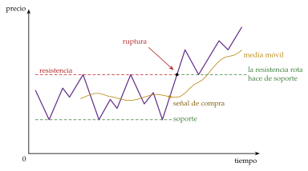
Fuente: elaboración propia a partir de Murphy (1999). La resistencia rota pasa a hacer de soporte; la media móvil sigue al precio con retraso. Más ejemplos, en «Soportes, resistencias y falsas rupturas» (Comparativa de Bancos) y «Qué son las medias móviles en trading» (Admirals).
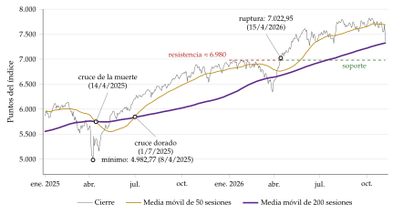
Fuente: elaboración propia a partir de S&P Dow Jones Indices (S&P 500, vía FRED) (S&P Dow Jones Indices, 2026). Hay que ver 3 cosas: el cruce de la muerte (14/4/2025) y el cruce dorado (1/7/2025); la resistencia de 6.980 puntos a principios de 2026; y su ruptura el 15/4/2026, tras la que hace de soporte.
Evidencia:
Brock, Lakonishok y LeBaron (1992) encontraron que reglas sencillas de medias móviles y de rupturas de soportes y resistencias habrían predicho el índice Dow Jones entre 1897 y 1986;
pero, corrigiendo por haber probado miles de reglas hasta dar con las que funcionan (data snooping), esa capacidad desaparece en los datos posteriores, y no resiste los costes de transacción;
algunos patrones gráficos sí contienen algo de información, aunque poca.
Valoración:
En contra: si el mercado es eficiente en sentido débil, no puede funcionar de forma sistemática; le falta una teoría económica, porque supone implícitamente comportamientos no racionales; y sus defensores recuerdan los aciertos y olvidan los fallos.
A favor: es sencillo y muy usado, y las finanzas conductuales le dan cierta base: la extrapolación y el momentum producen tendencias, y si muchos inversores siguen las mismas señales, estas pueden cumplirse solas, al menos a corto plazo. Por eso incluso quien no cree en él lo tiene en cuenta, porque los chartistas pueden pesar más que los fundamentalistas en la dirección de los precios a corto plazo, y lo usa para elegir el momento de entrar o salir.
Recapitulación: el análisis fundamental busca el valor y el técnico busca pautas en el precio; los 2 necesitan que el mercado no sea del todo eficiente, y la evidencia les deja poco margen después de costes.
Conclusión
Recapitulación:
En conclusión, la rentabilidad de una acción es una variable aleatoria, y lo que importa no es su riesgo aislado sino lo que aporta al de una cartera.
Markowitz mostró que diversificar reduce el riesgo sin sacrificar rentabilidad; Tobin, que todos deberían tener la misma cartera con riesgo; y el CAPM y la APT, que en equilibrio solo se paga el riesgo que no se puede diversificar.
Si además los mercados son eficientes, nadie bate al índice de forma sistemática y basta la gestión pasiva; las anomalías y las finanzas conductuales abren un resquicio a la gestión activa, con el análisis fundamental, que busca el valor intrínseco, y el técnico, que busca pautas en los precios.
Relevancia:
Los 3 enfoques son complementarios.
La teoría de la cartera dice si conviene un título por lo que aporta a la rentabilidad y al riesgo; el análisis fundamental, cuánto vale a medio y largo plazo; el técnico, cuándo entrar o salir.
Y todos tienen un componente subjetivo: que los inversores valoren distinto es lo que hace que los mercados sean líquidos y profundos.
Extensiones:
La renta fija [ver tema 3.B.24] y los derivados [ver tema 3.B.25]; el coste del capital y la valoración de proyectos y de empresas [ver tema 3.B.2] [ver tema 3.B.4]; la estructura de capital y los dividendos [ver tema 3.B.3]; la valoración basada en el consumo [ver tema 3.A.33]; la bolsa y la economía real, por el efecto riqueza, la \(q\) de Tobin y la política monetaria [ver tema 3.A.34] [ver tema 3.A.37]; las burbujas y su regulación [ver tema 3.B.26] [ver tema 3.B.27]; y los mercados de valores en España [ver tema 4.A.20].
Opinión:
Idea final:
«Nadie da nada por nada».
La bolsa paga una prima, pero solo por el riesgo que no se puede diversificar, y batir al mercado exige saber algo que el precio aún no recoge.
Lo único gratis es la diversificación: no poner todos los huevos en la misma cesta.
Y, más allá de quién gana y quién pierde, los mercados de renta variable cumplen una función que los justifica: canalizar el ahorro hacia la inversión de las empresas y repartir su riesgo.
A. Anexo: tipos de acciones y otros instrumentos de renta variable
Este anexo no se canta: completa el apartado I.1.2.
Según los derechos que confieren:
ordinarias, con los derechos mínimos del socio;
privilegiadas o preferentes, con algún derecho económico adicional, como un dividendo preferente;
sin voto, que a cambio dan derecho a un dividendo mínimo;
rescatables, que la sociedad puede amortizar, solo en las sociedades cotizadas.
Según su forma de representación: títulos, nominativos (con el nombre del titular) o al portador (es dueño quien tiene el título), o anotaciones en cuenta, la forma de las sociedades cotizadas.
Según su precio de emisión respecto al valor nominal: a la par o sobre la par, con prima de emisión. No se pueden emitir por debajo del valor nominal; la par se mide respecto al nominal, no al valor en libros.
Según su origen: antiguas y nuevas, emitidas en una ampliación de capital; entre las nuevas, de pago (el suscriptor aporta dinero o bienes), liberadas (se emiten con cargo a reservas y el accionista no paga nada) o parcialmente liberadas.
Según dónde se negocian: cotizadas, en un mercado regulado (la bolsa) o en un sistema multilateral de negociación (BME Growth), o no cotizadas, que se financian con capital riesgo (private equity) [ver tema 3.B.4].
Según su comportamiento en bolsa:
valores de primera fila (blue chips): gran capitalización, mucha liquidez y buenos fundamentos; son los más representativos del mercado y forman los índices (en España, el IBEX 35);
cíclicos: sus beneficios siguen al ciclo (construcción, química, automóvil, banca); suelen tener betas mayores que 1;
defensivos: beneficios estables en cualquier fase del ciclo (alimentación, electricidad, sanidad); betas menores que 1;
de crecimiento y de valor: los primeros cotizan con múltiplos altos por la expectativa de crecimiento; los segundos, con múltiplos bajos respecto de su valor contable (el factor HML de I.3.2);
especulativos: poca capitalización y mucha volatilidad.
Otros instrumentos de renta variable: los derechos de suscripción preferente, que se negocian por separado; las participaciones de fondos de inversión y de fondos cotizados (ETF), que dan a cualquier inversor una cartera diversificada; las sociedades cotizadas de inversión inmobiliaria (SOCIMI); los certificados de depósito (ADR, GDR), que permiten negociar una acción extranjera en otro mercado; y los warrants y demás derivados sobre acciones [ver tema 3.B.25].
Cómo se gana con una acción: por la venta (plusvalía o minusvalía), por los dividendos (la parte del beneficio que se reparte es el pay-out) y, quien vende en corto, por la caída del precio: toma prestadas las acciones, las vende y las recompra después más baratas para devolverlas.
B. Anexo: derivaciones
Este anexo no se canta: son las demostraciones de los resultados del bloque I.
B.1. El límite de la diversificación en el modelo de la diagonal
Sean \(n\) activos con pesos iguales, \(w_i=1/n\). Por (8): \[\sigma_p^2=\left(\frac1n\sum_{i=1}^{n}\beta_i\right)^2\sigma_M^2+\frac1{n^2}\sum_{i=1}^{n}\sigma_{\varepsilon_i}^2=\bar\beta_n^{\,2}\,\sigma_M^2+\frac1n\,\bar s_n,\] donde \(\bar\beta_n\) es la beta media y \(\bar s_n\) la varianza específica media de los \(n\) activos.
Riesgo específico: si las varianzas específicas están acotadas, \(\sigma_{\varepsilon_i}^2\leq\bar s\) para todo \(i\), entonces \(0\leq\bar s_n/n\leq\bar s/n\to0\).
Riesgo sistemático: si la beta media converge a un valor \(\bar\beta>0\) (en el límite, la cartera es todo el mercado y \(\bar\beta=1\)), \(\bar\beta_n^{\,2}\sigma_M^2\to\bar\beta^{\,2}\sigma_M^2>0\).
Por tanto, \(\lim_{n\to\infty}\sigma_p^2=\bar\beta^{\,2}\sigma_M^2>0\): la diversificación elimina el riesgo específico, pero no el sistemático. ∎
Error que conviene evitar: escribir \(\beta_p^2=\sum_iw_i^2\beta_i^2\). Con pesos iguales daría \(\frac1{n^2}\sum_i\beta_i^2\to0\), como si también el riesgo sistemático se pudiera eliminar diversificando.
B.2. Por qué la línea de asignación de capital es una recta
Con una proporción \(w\) en la cartera con riesgo \(T\) y \(1-w\) en el activo sin riesgo, la rentabilidad esperada es la media ponderada, \(\mathbb{E}[r_p]=(1-w)\,r_f+w\,\mathbb{E}[r_T]\).
La varianza es \(\sigma_p^2=(1-w)^2\cdot0+w^2\sigma_T^2+2w(1-w)\cdot0=w^2\sigma_T^2\), porque el activo seguro no tiene varianza ni covaría con nada: \(\sigma_p=w\,\sigma_T\). No es que la desviación típica sea una media ponderada (en general no lo es): lo es aquí porque un componente no tiene riesgo.
Despejando \(w=\sigma_p/\sigma_T\) y sustituyendo: \[\mathbb{E}[r_p]=\left(1-\frac{\sigma_p}{\sigma_T}\right)r_f+\frac{\sigma_p}{\sigma_T}\,\mathbb{E}[r_T]=r_f+\frac{\mathbb{E}[r_T]-r_f}{\sigma_T}\,\sigma_p,\] una recta en el plano \((\sigma_p,\mathbb{E}[r_p])\) con ordenada \(r_f\) y pendiente igual a la ratio de Sharpe de \(T\). Con \(T=M\) es la CML. ∎
B.3. La derivación del CAPM
Es la derivación de Sharpe (1964), en la forma de Bodie, Kane y Marcus (2021, cap. 9).
En equilibrio, la cartera de mercado \(M\) está en la frontera eficiente y la CML, \(\mathbb{E}[r_p]=r_f+\frac{\mathbb{E}[r_M]-r_f}{\sigma_M}\sigma_p\), es tangente a ella en \(M\).
Tómese un activo cualquiera \(i\) y fórmense carteras con una proporción \(a\) en \(i\) y \(1-a\) en \(M\): \[\mathbb{E}[r_a]=a\,\mathbb{E}[r_i]+(1-a)\,\mathbb{E}[r_M],\qquad \sigma_a=\left[a^2\sigma_i^2+(1-a)^2\sigma_M^2+2a(1-a)\sigma_{iM}\right]^{1/2}\] Al variar \(a\), estas carteras dibujan una curva que pasa por \(M\) con \(a=0\). Como \(M\) ya contiene a \(i\), la curva atraviesa \(M\) sin cruzar la frontera eficiente: en \(M\) tiene que ser tangente a ella y, por tanto, a la CML.
Pendiente de la curva en \(a=0\). Derivando: \[\frac{d\mathbb{E}[r_a]}{da}=\mathbb{E}[r_i]-\mathbb{E}[r_M],\qquad \left.\frac{d\sigma_a}{da}\right|_{a=0}=\frac{\sigma_{iM}-\sigma_M^2}{\sigma_M},\qquad \left.\frac{d\mathbb{E}[r_a]}{d\sigma_a}\right|_{a=0}=\frac{\left(\mathbb{E}[r_i]-\mathbb{E}[r_M]\right)\sigma_M}{\sigma_{iM}-\sigma_M^2}\]
Igualando a la pendiente de la CML: \[\frac{\left(\mathbb{E}[r_i]-\mathbb{E}[r_M]\right)\sigma_M}{\sigma_{iM}-\sigma_M^2}=\frac{\mathbb{E}[r_M]-r_f}{\sigma_M}\ \Rightarrow\ \mathbb{E}[r_i]-\mathbb{E}[r_M]=\left(\mathbb{E}[r_M]-r_f\right)\left(\frac{\sigma_{iM}}{\sigma_M^2}-1\right),\] y, como \(\beta_i=\sigma_{iM}/\sigma_M^2\), \(\mathbb{E}[r_i]=r_f+\beta_i\left(\mathbb{E}[r_M]-r_f\right)\), la SML (10). ∎
Lectura: la derivación usa solo 2 cosas, que \(M\) es eficiente y que la CML es tangente en \(M\). Por eso contrastar el CAPM es contrastar que la cartera de mercado es eficiente en media y varianza: es el punto de partida de la crítica de Roll (I.3.1).
B.4. La ecuación de la APT con un factor
Deduce (12) en el caso más sencillo.
Sean 2 carteras bien diversificadas, \(A\) y \(B\), sin riesgo específico: \(r_A=\mathbb{E}[r_A]+\beta_AF\) y \(r_B=\mathbb{E}[r_B]+\beta_BF\), con \(\beta_A\neq\beta_B\).
Fórmese una cartera con pesos \(w_A=\beta_B/(\beta_B-\beta_A)\) y \(w_B=-\beta_A/(\beta_B-\beta_A)\), que suman 1. Su sensibilidad al factor es \(w_A\beta_A+w_B\beta_B=0\): no tiene riesgo.
Para que no haya arbitraje, debe rendir \(r_f\): \[\frac{\beta_B\,\mathbb{E}[r_A]-\beta_A\,\mathbb{E}[r_B]}{\beta_B-\beta_A}=r_f\ \Rightarrow\ \frac{\mathbb{E}[r_A]-r_f}{\beta_A}=\frac{\mathbb{E}[r_B]-r_f}{\beta_B}\equiv\lambda\]
La prima por unidad de sensibilidad es la misma para todas las carteras bien diversificadas: \(\mathbb{E}[r_p]=r_f+\beta_p\lambda\). Con \(J\) factores, el mismo argumento, factor a factor, da \(\mathbb{E}[r_i]=r_f+\sum_j\beta_{ij}\lambda_j\). ∎
El arbitraje en la práctica: si 2 carteras con la misma beta rinden distinto, se compra la de más rentabilidad esperada y se vende en corto la misma cantidad de la otra; la cartera no cuesta nada, tiene beta cero y gana con seguridad la diferencia. Los precios se ajustan hasta eliminarla.
Para activos sueltos, con riesgo específico, la relación solo se cumple de forma aproximada: puede fallar para unos pocos, pero no para la mayoría.
B.5. La línea del mercado de capitales frente a la línea del mercado de títulos
La CML y la SML no son la misma recta (tabla 6 y gráfico 9).
Las carteras eficientes están en las 2 a la vez: una cartera \(p\) de la CML combina \(M\) y el activo sin riesgo, luego \(\mathrm{corr}(r_p,r_M)=1\) y \(\beta_p=\mathrm{corr}(r_p,r_M)\,\sigma_p/\sigma_M=\sigma_p/\sigma_M\); sustituida en la SML, da la CML. Un activo suelto está en la SML, pero por debajo de la CML: su riesgo específico aumenta \(\sigma\) y no se paga.
| CML (Tobin) | SML (CAPM) | |
|---|---|---|
| Ecuación | \(\mathbb{E}[r_p]=r_f+\dfrac{\mathbb{E}[r_M]-r_f}{\sigma_M}\,\sigma_p\) | \(\mathbb{E}[r_i]=r_f+\beta_i\,\lambda_M\) |
| Plano | \((\sigma,\mathbb{E}[r])\) | \((\beta,\mathbb{E}[r])\) |
| Medida del riesgo | Riesgo total, \(\sigma\) | Riesgo sistemático, \(\beta\) |
| Qué activos | Solo las carteras eficientes | Todos los activos y carteras |
| Pendiente | Ratio de Sharpe del mercado | Prima del mercado, \(\lambda_M\) |
Fuente: elaboración propia a partir de Bodie, Kane y Marcus (2021, cap. 9).
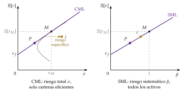
Fuente: elaboración propia a partir de Bodie, Kane y Marcus (2021, cap. 9). La cartera eficiente \(P\) está en las 2 rectas; el activo \(i\), solo en la SML.
C. Anexo: indicadores del análisis técnico
Este anexo no se canta: completa el apartado III.2.
Fuentes de información: el precio, el volumen negociado y, en los futuros y las opciones, el interés abierto, el número de contratos vivos: cada contrato tiene un comprador y un vendedor, y está abierto desde que se negocia hasta que se cierra [ver tema 3.B.25].
Velas japonesas: cada vela resume el precio de apertura, el de cierre, el máximo y el mínimo de una sesión; el cuerpo va del de apertura al de cierre, y las mechas, al máximo y al mínimo (figura 2). De la forma de las velas y de su sucesión se infieren tendencias; hoy es el gráfico más usado por los analistas técnicos.
Índice de fuerza relativa (RSI) de Wilder (1978): \(\mathrm{RSI}=100-100/(1+RS)\), con \(RS\) la media de las subidas entre la media de las bajadas de las últimas 14 sesiones. Va de 0 a 100; por encima de 70 se dice que el valor está sobrecomprado y por debajo de 30, sobrevendido. No hay que confundirlo con la fuerza relativa de una acción, su precio dividido entre un índice de su sector o del mercado, que mide si lo hace mejor o peor que este.
Indicadores de sentimiento, que se suelen leer al revés de la opinión dominante:
la ratio put-call, entre las opciones de venta y las de compra negociadas: si es alta, el mercado es pesimista, y un técnico de opinión contraria lo lee como señal de compra;
el índice de confianza de Barron’s, el rendimiento de los bonos de mayor calidad entre el de los de calidad intermedia: cuando los inversores confían, se conforman con menos prima por el riesgo de crédito y el índice sube.
Las 2 posturas de los analistas técnicos:
la de opinión contraria: en los mercados intervienen muchos inversores sin conocimientos que se mueven por impulsos y se equivocan en los extremos, así que hay que hacer lo contrario que la mayoría;
la de seguir al dinero inteligente: hay inversores mejor informados que la media, que obtienen más rentabilidad, y conviene imitarlos.
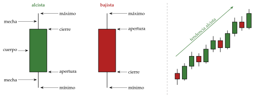
Fuente: elaboración propia a partir de Murphy (1999).
D. Anexo: preguntas de test
Preguntas tipo test del primer ejercicio: simulador de test.
Fechas y autores: Graham y Dodd (1934); Markowitz (1952); Tobin (1958); Sharpe (1963, modelo de la diagonal; 1964, CAPM), Lintner (1965) y Mossin (1966); Jensen (1968); Fama (1970); Black (1972); Merton (1973);24 Ross (1976); Roll (1977); Breeden (1979); Grossman y Stiglitz (1980); Shiller (1981); Fama y French (1992, 1993, 2015). Premios Nobel: Markowitz, Miller y Sharpe (1990); Fama, Hansen y Shiller (2013); Thaler (2017).
Trampas:
\(\beta_i=\mathrm{Cov}(r_i,r_M)/\mathrm{Var}(r_M)\), no la volatilidad relativa; un activo con \(\beta=0\) rinde \(r_f\) aunque tenga riesgo, y uno con \(\beta<0\), menos que \(r_f\);
la CML vale solo para carteras eficientes, con \(\sigma\); la SML, para todos los activos, con \(\beta\);
en el modelo de la diagonal es diagonal la matriz de covarianzas de los residuos, no la de las rentabilidades;
la APT es de no arbitraje, no de equilibrio, y no dice cuáles son los factores;
toda prueba de eficiencia contrasta también un modelo de valoración (hipótesis conjunta);
el descuento estándar es exponencial; el que se observa, cuasihiperbólico;
con eficiencia débil no funciona el análisis técnico; con la semifuerte, tampoco el fundamental.
Bibliografía
Tobin recibió el Premio Nobel de Economía en 1981 «por su análisis de los mercados financieros y de sus relaciones con las decisiones de gasto, el empleo, la producción y los precios».↩︎
La definición es la de Bodie, Kane y Marcus (2021, cap. 1). Se distinguen 2 tipos de activos. Los activos reales (tierra, edificios, máquinas, conocimiento) determinan la capacidad productiva de una economía. Los activos financieros son derechos sobre los activos reales o sobre las rentas que generan: no aumentan directamente esa capacidad, pero deciden quién la aprovecha. Por eso un activo financiero es siempre, a la vez, el pasivo (o el patrimonio neto) de otro agente, el emisor, mientras que un activo real no es pasivo de nadie.↩︎
Cuando Markowitz defendió su tesis en Chicago (1954), Milton Friedman, miembro del tribunal, comentó medio en broma que aquello no era economía y que no se le podía dar el título de doctor en economía. Su director había sido Jacob Marschak. Friedman recibió el Premio Nobel de Economía en 1976 «por sus logros en el análisis del consumo, la historia y la teoría monetarias y por demostrar la complejidad de la política de estabilización».↩︎
Franco Modigliani, que con Miller había formulado en 1958 la irrelevancia de la estructura de capital [ver tema 3.B.3], lo había recibido en 1985 «por sus análisis pioneros del ahorro y de los mercados financieros». Gracias a estos autores, las finanzas se estudian como «economía financiera»: la teoría económica entra en el análisis de los mercados financieros.↩︎
En una oferta pública de suscripción (OPS) la sociedad emite acciones nuevas y capta fondos; en una oferta pública de venta (OPV) son los accionistas actuales los que venden, y la sociedad no capta nada. Las salidas a bolsa combinan a menudo las 2. Una vía reciente son las sociedades cotizadas con propósito para la adquisición (SPAC): sociedades sin actividad que salen a bolsa para comprar después una empresa no cotizada, que así cotiza sin una salida propia. Salir a bolsa da acceso a muchos más inversores, también minoristas, que la financiación privada (private equity); a cambio, dispersa la propiedad y los fundadores pierden control [ver tema 3.B.3].↩︎
Antes de Markowitz, cualquier inversor sabía que no convenía jugárselo todo a una carta, pero nadie sabía decir cuánto repartir ni con qué criterio. Markowitz aplicó el concepto matemático de eficiencia que había aprendido de Tjalling Koopmans (Premio Nobel de Economía en 1975, con Leonid Kantoróvich, «por sus contribuciones a la teoría de la asignación óptima de recursos») y definió un criterio objetivo para decir cuándo una cartera es mejor que otra. La metáfora de los huevos, además, se queda corta: lo que importa no son los huevos, sino las gallinas que los ponen y si se llevan bien entre sí; es decir, cómo se mueve el precio de cada acción con el de las demás.↩︎
La aversión al riesgo es la concavidad de la función de utilidad de Bernoulli sobre la riqueza: la utilidad crece con la riqueza a un ritmo decreciente, así que perder 1 euro quita más utilidad de la que da ganarlo, y una apuesta justa reduce la utilidad esperada [ver tema 3.A.10]. Es el componente subjetivo del modelo.↩︎
Una venta en corto (o al descubierto) es la venta de un activo que no se tiene, tomándolo prestado, para recomprarlo más tarde y devolverlo; se gana si el precio baja. En el modelo equivale a un peso negativo, \(w_i<0\).↩︎
Por eso el inversor nunca pone en el activo de menor rentabilidad más peso que el de la cartera sin riesgo. ¿Se puede llegar a una varianza nula? Con correlación \(-1\), siempre. Con correlación \(1\), solo si se permiten las ventas en corto y las volatilidades son distintas: se compra un activo y se vende el otro en la proporción justa. Con una correlación intermedia, nunca.↩︎
Con utilidad de media y varianza \(U=\mathbb{E}[r_p]-\tfrac{a}{2}\sigma_p^2\), donde \(a>0\) mide la aversión al riesgo, el peso óptimo de la cartera con riesgo sale de derivar \(U(w)=r_f+w\,(\mathbb{E}[r_T]-r_f)-\tfrac{a}{2}w^2\sigma_T^2\) e igualar a cero: \(w^*=(\mathbb{E}[r_T]-r_f)/(a\,\sigma_T^2)\). Es mayor cuanto mayor es la prima y menor cuanto mayores son la aversión o el riesgo.↩︎
Markowitz ya lo había sugerido. William Sharpe desarrolló la idea en su tesis, que preparaba en UCLA mientras trabajaba en la RAND Corporation, donde estaba Markowitz: este no formaba parte de su tribunal, pero hizo un papel parecido al de director. Los 2 compartieron el Nobel de 1990.↩︎
Sharpe (1964), Lintner (1965) y Mossin (1966) llegaron al modelo de forma independiente, 12 años después de Markowitz (1952); Jack Treynor lo había formulado antes en trabajos que no publicó en su momento. Sharpe recibió por él el Nobel de 1990.↩︎
Dividiendo la SML por \(\beta_i\): \((\mathbb{E}[r_i]-r_f)/\beta_i=\lambda_M\) para todo \(i\). Esa ratio es la ratio de Treynor, la prima por unidad de riesgo sistemático; la ratio de Sharpe, \((\mathbb{E}[r_p]-r_f)/\sigma_p\), es la prima por unidad de riesgo total y la pendiente de la CAL (I.2.2). Para juzgar una cartera que es todo el patrimonio del inversor se usa la de Sharpe; para un activo o un fondo que va a formar parte de una cartera mayor, la de Treynor. Ninguna de las 2 basta sola: hay que mirar también el plazo y los objetivos de la inversión.↩︎
Resúmenes breves, en «Roll’s critique» (Wikipedia) y «Roll’s Critique» (Investopedia).↩︎
Tras la crisis de 2008, la HME se convirtió en blanco de muchas críticas. Fox (2009) la culpa de la confianza en que los mercados financieros se regulaban solos, y Quiggin (2010) la incluye entre las «ideas zombi», refutadas por los hechos pero vivas en la academia. Que el Nobel de 2013 premiara a la vez a Fama y a Shiller, su crítico más conocido, resume bien el estado del debate.↩︎
Que no haya arbitraje no impide obtener rentabilidades positivas a largo plazo: las obtienen quienes asumen más riesgo o invierten a más plazo. Lo que no tendría fundamento es la gestión activa.↩︎
Sin arbitraje, existe una distribución de probabilidad, la medida de martingala equivalente, con la que los precios descontados son martingalas: su valor esperado mañana es su valor de hoy. Pero esa distribución corrige las probabilidades reales por la aversión al riesgo de los agentes, así que con las probabilidades reales puede haber cierta predecibilidad de las rentabilidades si las primas de riesgo cambian en el tiempo.↩︎
Kahneman recibió el Premio Nobel de Economía en 2002 «por haber integrado en la ciencia económica conocimientos de la investigación psicológica, en especial sobre el juicio y la toma de decisiones en condiciones de incertidumbre»; Tversky había muerto en 1996.↩︎
Benjamin Graham lo divulgó después en The Intelligent Investor (1949). Análisis fundamental e inversión en valor (value investing) suelen ir juntos, pero no son lo mismo: el primero es una técnica para estimar el valor; la segunda, un estilo de inversión que compra acciones cuyo precio está por debajo de su valor intrínseco y espera, a veces años, a que el mercado lo reconozca. Su seguidor más conocido es Warren Buffett.↩︎
Un PER alto no significa que la acción esté cara: puede que el mercado espere un fuerte crecimiento de los beneficios, y solo habría que vender si la expectativa propia es menor. Un PER bajo tampoco significa que esté barata. El PER se interpreta también como los años que tardaría en recuperarse la inversión si el beneficio no cambiara. Sus inconvenientes: no sirve con pérdidas y relaciona un precio, que mira al futuro, con un beneficio contable del pasado, por lo que se usa el beneficio previsto.↩︎
El EBIT es el resultado de explotación, antes del resultado financiero y de los impuestos [ver tema 3.B.1]. Si se comparan empresas con regímenes fiscales distintos, es mejor usar el resultado de explotación después de impuestos.↩︎
La media móvil simple da el mismo peso a todas las sesiones; la exponencial da más peso a las más recientes.↩︎
Stiglitz recibió el Premio Nobel de Economía en 2001, con George Akerlof y Michael Spence, «por sus análisis de los mercados con información asimétrica».↩︎
Robert Merton recibió el Premio Nobel de Economía en 1997, con Myron Scholes, «por un nuevo método para determinar el valor de los derivados».↩︎